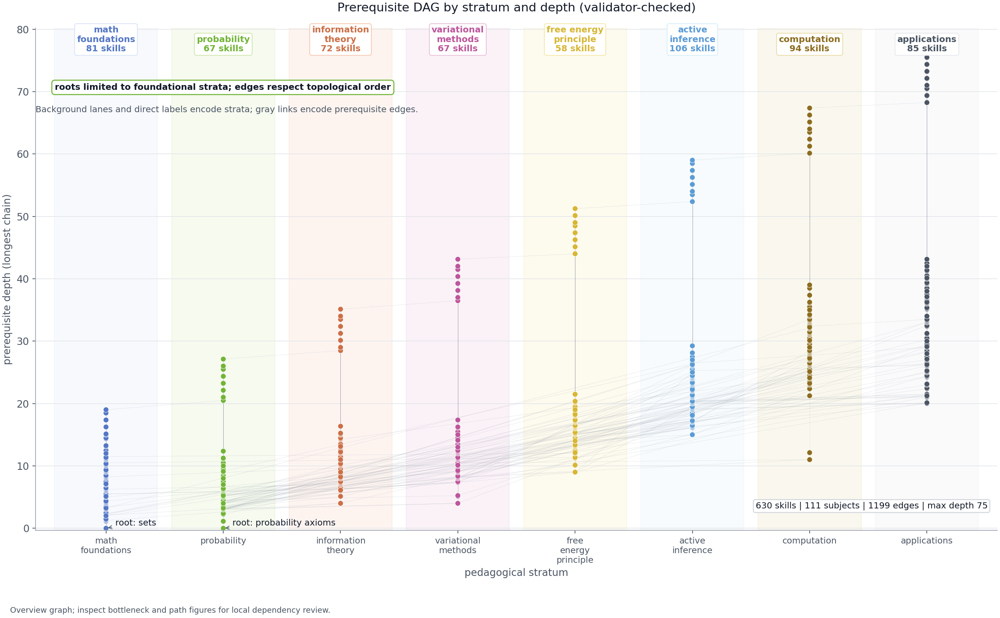
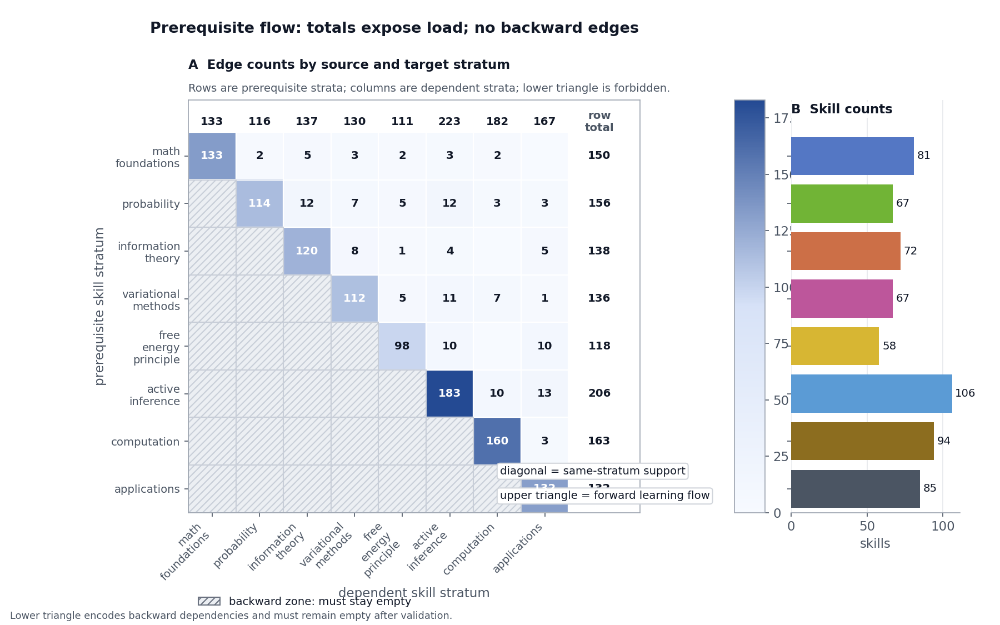
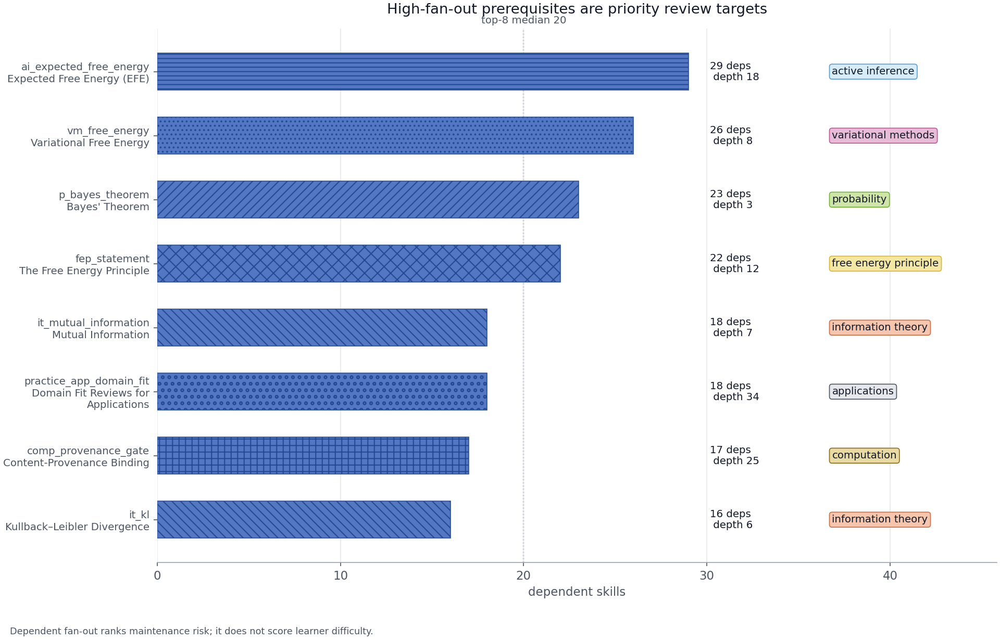
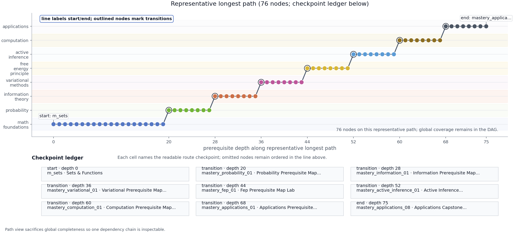
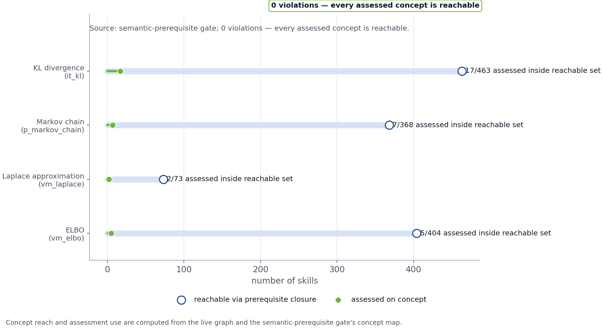
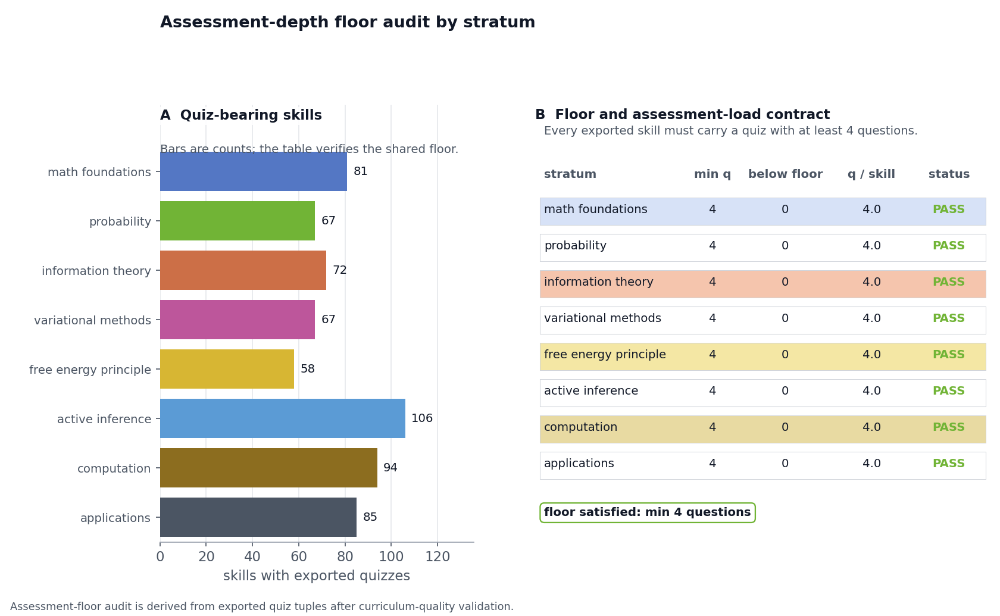
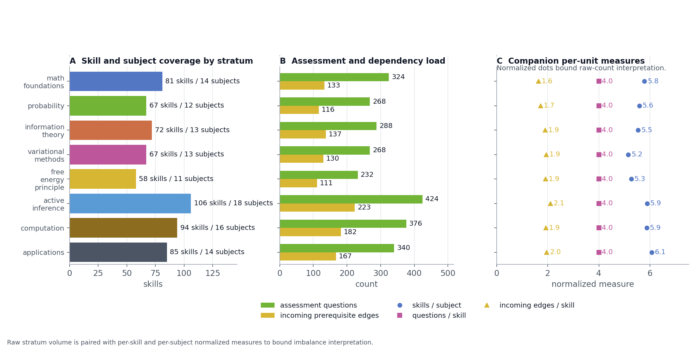

1 Abstract: Active Skillference as Provenance-Bound Curriculum Infrastructure
Active Inference and the Free Energy Principle (FEP) provide model-based accounts of belief updating, learning, and action under uncertainty. We present Active Skillference, a provenance-bound curriculum-generation and SkillTree-export system for teaching those formal ideas. The paper evaluates structural validity, quantitative provenance, citation-role coverage, and artifact reproducibility; it does not evaluate learner outcomes, establish a new theory of Active Inference, or present an intelligent tutoring system.
The curriculum is expressed as code: a typed, validated directed acyclic graph of 630 skills across 111 subjects spanning all 8 strata (mathematics -> probability -> information theory -> variational methods -> the FEP -> active inference -> computation -> applications), connected by 1199 prerequisite edges with a maximum dependency depth of 75 (of which the substantive concept chain accounts for 33; the remaining depth is per-stratum review and mastery sequencing rather than conceptual prerequisite, as the methodology details). Its defining feature is content-provenance binding: every quantitative value shown to a learner is produced by a tested computational kernel and inserted through a typed claim token, never hand-typed, and the build refuses to export if a claim is unbacked or if a bare result number appears in learner prose, manuscript prose, or correct numeric quiz answers. The contribution is therefore a systems and curriculum-infrastructure artifact: it makes a formal subject inspectable and deliverable, but does not claim that the resulting path is optimal for every learner.
The validated graph exports directly into SkillTree’s data model (Project -> Subjects -> Skills with learning-path dependencies and quiz-gated completion), includes a scripted REST seeding path for a configured instance, and is mirrored by a local dashboard that exposes generated artifacts, figures, claim ledgers, scholarship audits, and graph diagnostics without taking ownership of learner progress or scoring from SkillTree. The result is a curriculum with a validator-backed artifact chain: re-running the kernels regenerates the claim ledger, figures, manuscript variables, SkillTree export, and learner-facing numbers, so the platform’s teaching claims remain bounded by what the code, citations, validators, and documented limitations actually support.
2 Introduction: Why Active Inference Needs an Auditable Learning Path
2.1 Problem: prerequisite opacity, numerical drift, and evidence-status confusion
2.1.1 Historical lineage and model boundary
The Free Energy Principle is often situated in a historically bounded perception-as-inference context that includes Helmholtz’s account of unconscious inference, Bayesian-brain accounts of neural uncertainty, and tutorials that make prediction error and variational bounds teachable (Helmholtz 1867; Knill and Pouget 2004; Bogacz 2017; Sprevak and Smith 2023). Its deeper background is selective rather than a single direct descent: ancient accounts of demonstration and ordered instruction, medieval optical work, early-modern method and probability, and eighteenth-century accounts of association and education all expose related questions about evidence, perception, uncertainty, and sequence (Aristotle 1901; Ibn al-Haytham 1989; Quintilian 95 AD; Bacon 1620; Descartes 1628; Huygens 1657; Newton 1704; Rousseau 1762). Bernoulli, de Moivre, Bayes, and Laplace then anchor more specific histories of probability and inverse-probability reasoning, while Berkeley, Hume, Condillac, Hartley, Locke, Comenius, and Kant provide distinct traditions of perception, association, habit, experience, and structured cognition (Bernoulli 1713; Moivre 1718; Bayes and Price 1763; Laplace 1774; Berkeley 1709; Hume 1739; Condillac 1754; Hartley 1749; Locke 1690; Comenius 1657; Kant 1781). These sources are historical context and design analogies, not evidence that modern variational free energy, Bayesian brain models, or Active Inference already existed in their period; the fuller selective history appears in sec. 17.
The modern FEP frames self-organizing systems in terms of variational free energy, with review work clarifying both the principle’s scope and the need to avoid oversimplified readings (Friston et al. 2006; Friston 2010; Friston et al. 2023; Zhang and Xu 2024). In the discrete formulations used here, Active Inference supplies model-based rules for belief updating and policy evaluation: variational free energy is used for current inference, while expected free energy evaluates policies under stated preferences and observation models (K. Friston et al. 2017; Da Costa et al. 2020; Parr et al. 2022; Pezzulo et al. 2024). The word agent therefore names a modeled decision-making system; it does not by itself establish consciousness, intelligence, autonomy, or empirical adequacy.
2.2 Situation awareness: theory, model, software, and education are different objects
2.2.1 Education and delivery boundary
The field is easiest to misread when four layers are collapsed into
one label. At the theory layer, the FEP is a broad explanatory and
mathematical framing whose scope, generality, and distinctive empirical
predictions remain matters of active debate (Friston et al.
2023; Aguilera et al. 2022; Gershman 2019; Hodson et al.
2024). At the model layer, a discrete Active-Inference
process theory specifies beliefs, likelihoods, preferences, policies,
and an inference or planning scheme; changing those assumptions changes
the model’s behavior, even when authors use the same vocabulary (K. Friston et al.
2017; Da
Costa et al. 2020; Parr et al. 2022; Millidge, Tschantz,
et al. 2021). A software implementation then adds a third
layer: libraries such as pymdp and this project’s kernels
are executable realizations with different goals, tests, and coverage,
not interchangeable evidence for the theory or for biological adequacy
(Heins et al. 2022;
Oostrum et al.
2025).
The education layer adds a fourth boundary. Active-learning and prepared-environment proposals make the framework relevant to instruction, while knowledge-space and curriculum-aware cognitive-diagnosis work describe stronger learner-model commitments that require response data and an explicit account of learner state (Di Paolo et al. 2024; Doignon and Falmagne 1985; Falmagne and Doignon 2011; Fu and Fang 2025). Learning analytics can support such future evaluation, but its use also creates privacy, data-protection, validity, and human-oversight obligations (Liu and Khalil 2023; Sclater and Bailey 2015). SkillTree is a delivery substrate with its own runtime semantics; it does not convert a curriculum export into an intelligent tutor or turn a model demonstration into learner-outcome evidence (SkillTree 2026; National Security Agency 2020).
A modeled Active-Inference agent is therefore a formal decision-making object with specified states, observations, preferences, and policies; it is not by itself an intelligent system. An intelligent system would require a separate capability and evaluation argument, while an adaptive learner-facing tutor would additionally require learner-state data, intervention logic, and prospective outcome evidence. Active Skillference occupies the intersection of these layers as a provenance-bound curriculum artifact: it makes a selected model family representable, teachable, and inspectable without claiming to settle the theory, personalize instruction, or measure learning.
That compact summary hides a long prerequisite chain. To interpret expected free energy, a learner needs KL divergence; to interpret KL divergence, entropy and expectation; and to work with those quantities, probability, logarithms, optimization, and the geometry of distributions. A learner can encounter apex terms such as “expected free energy” or “epistemic value” before the mathematical foundations that make them derivable. The pedagogical risk is conceptual miscalibration: a learner may know the words before being able to compute the quantities or distinguish mathematical identities from process-theory commitments, empirical hypotheses, and philosophical scope claims. Active Inference tutorials and expected-free-energy derivation reviews show why the formal sequence cannot be replaced by slogans, while education-oriented and associative-learning Active Inference work frames learning as structured exploration of prepared material, attention, and prediction-error reduction rather than passive term recognition (Smith et al. 2022; Millidge, Tschantz, et al. 2021; Champion et al. 2026; Di Paolo et al. 2024; Anokhin et al. 2024).
A second problem is quantitative integrity. Hand-maintained numerical examples can drift from the equations they illustrate. Without an executable source of truth, a reader cannot tell whether a displayed value was computed, rounded, copied, or invented. This is a design risk that the platform addresses; it is not a prevalence claim about every tutorial or textbook.
A third problem is scholarship drift. A manuscript can accumulate citations that are syntactically valid but weakly connected to the claims they are supposed to support, while newer reviews or critiques change the evidential status of a phrase without changing its syntax. That matters here because technical critiques of FEP generality and recent empirical-status reviews, psychology-and-psychiatry progress reviews, and distinctive-prediction critiques belong in the evidential context (Aguilera et al. 2022, 2023; Hodson et al. 2024; Badcock and Davey 2024; Gershman 2019). This project treats the bibliography as part of the build contract: every cited source is mapped to a support lane and role, then checked before figures or learner artifacts are emitted.
2.3 Approach: provenance-bound prerequisites delivered through SkillTree
Active Skillference addresses the three failure modes with one construction: a validated directed acyclic graph whose nodes are atomic skills and whose edges are explicit prerequisites. A skill is reachable only after the graph resolves the dependencies that precede it. The graph spans 8 strata from mathematical foundations to applications and is checked to be acyclic, connected from foundations to applications, and free of dangling prerequisites. This follows the basic premise of prerequisite-sensitive curriculum design: ordering is part of the learning object (Bloom 1956; Liang et al. 2018). The result is also interpretable through knowledge-space and learning-space theory, but only as an authored closure condition over course content; this release does not infer an individual’s knowledge state or implement an adaptive diagnostic learning-space engine (Doignon and Falmagne 1985; Falmagne and Doignon 2011).
The evaluation is correspondingly bounded by four questions. First, does the curriculum graph satisfy its declared structural and assessment invariants? Second, can quantitative examples be regenerated from tested kernels without unbacked or hand-entered result values? Third, can citation roles, manuscript claims, figures, and generated artifacts be audited as one evidence surface? Fourth, does the export preserve SkillTree’s ownership of learning paths, quizzes, progress, and scoring? These questions evaluate the artifact and its delivery contract; they do not test whether the curriculum is optimal, whether an Active-Inference model is empirically true, or whether learners improve.
Every quantitative claim in a skill’s content is produced by a tested
computational kernel and inserted through a claim:NAME
token. The platform refuses to publish a skill whose claims are not
backed by code, and a linter flags any bare result number that slips
into prose outside a claim token or LaTeX math. Thus the worked example
that teaches entropy shows 0.693147 nats for a fair coin and 4.60517
nats for a one-in-a-hundred event because the kernel computed those
values.
Finally, the curriculum is built for delivery. It targets SkillTree, an open-source training and gamification platform whose public documentation describes Project -> Subject -> Skill composition, learning paths, and quiz-based knowledge checks (National Security Agency 2020, 2026b, 2026a; SkillTree 2026). Active Skillference maps subjects, skills, prerequisite learning paths, and quizzes onto that data model so the exported artifact can be inspected and, when the service is available, handed to a real progress-tracking environment. The citation is a platform-provenance claim: it identifies the SkillTree substrate and its government open-source origin, not an endorsement of this curriculum or a security assurance for any deployment.
The delivery layer also belongs to a wider community and open-science setting. The Active Inference Institute’s public website repository describes a static resource hub with audience-specific pathways for newcomers, learners, researchers, developers, contributors, partners, and supporters; public repositories and learning resources; and an explicit boundary for sanitizing and verifying public projections (Active Inference Institute 2026c). Active Skillference contributes one interoperable piece to that ecosystem: a provenance-bound curriculum and SkillTree delivery contract that makes formal examples, source roles, prerequisites, and release checks inspectable. This is a contribution to community-facing educational infrastructure, not a claim that the project represents the Institute, speaks for its contributors, or replaces its broader open-science programs.
These design choices turn the paper’s contribution from a list of topics into a set of auditable contracts. Each contribution below is either a checked structure, a provenance gate, a source-role audit, or a delivery path into the existing SkillTree runtime.
The contribution map is therefore tied to six evidence classes. Structural evidence covers graph, prerequisite, assessment, and artifact invariants. Computed evidence covers values regenerated by tested kernels and resolved claim tokens. Simulation evidence covers fixed-input demonstrations whose behavior is conditional on an explicit model and parameter regime. Literature evidence covers historical lineage, formal definitions, pedagogical rationale, platform provenance, and critiques, each assigned a source role. Delivery evidence covers export, REST-contract, dashboard, and publication surfaces. Scope-limit evidence records what the validators and sources cannot establish: biological adequacy, learner-state inference, personalization, efficacy, retention, or transfer. No evidence class is used as a substitute for another.
2.4 Contributions: graph validation, provenance binding, scholarship audit, and delivery
- Structural evidence: a typed, validated prerequisite-DAG engine for curriculum design, including cycle detection, topological ordering, depth levels, and connectivity checks.
- Computed evidence: a content-provenance binding mechanism that ties every learner-facing number to a tested kernel and fails the build otherwise.
- Curriculum representation: an implemented Active Inference curriculum – 630 skills across all 8 strata – authored against that engine.
- Delivery evidence: a SkillTree exporter and seeder that turns the curriculum into an importable, gamified training profile, with live availability treated as an external dependency.
- Literature evidence: a scholarship coverage audit that maps manuscript citations to source roles and generates a reproducible coverage artifact.
- Scope-limit evidence: an explicit boundary between formal model demonstrations, implementation checks, delivery checks, and future learner-outcome evaluation.
3 Methods Overview: From Mathematical Kernels to a Validated Learning Artifact
The platform is layered so that each concern is testable in isolation and composes through fixed interfaces. The method therefore moves from numerical sources of truth, to claim and citation gates, to the curriculum graph, and finally to the exported SkillTree and publication surfaces that consume those artifacts.
The subsections below separate numerical provenance, scholarship coverage, curriculum structure, and delivery integration so each evidential claim can be checked against its own validator rather than blended into a single platform assertion.
3.1 Evidence classes and construction boundary
The construction uses a deliberately plural evidence contract. Structural validators check graph and artifact invariants; computational validators regenerate numerical claims; fixed-input simulations illustrate model-specific behavior; scholarship validators check citation resolution, source roles, and locator health; delivery checks inspect SkillTree export and dashboard handoff surfaces; and scope-limit statements prevent any of those checks from being read as learner-outcome or theory-validation evidence. This separation is consistent with reproducible-science and FAIR reporting principles, but the local implementation remains a repository-level artifact chain rather than a general scientific provenance service (Munafò et al. 2017; Wilkinson et al. 2016).
4 Methods: Computational Kernels, Model Scope, and Quantitative Provenance
4.1 Computational kernels as the sole authority for quantitative examples
The src/kernels package implements the mathematics of
Active Inference as pure, numerically stable, fully typed functions in
natural-log (nats) units:
- Information – surprise \(-\ln p\), Shannon entropy \(H(p)=-\sum_x p(x)\ln p(x)\), cross-entropy, Kullback-Leibler divergence \(\mathrm{KL}(p\|q)\), and mutual information, following the original and textbook information-theory treatments (Shannon 1948; Cover and Thomas 2006).
- Distributions – normalization, a precision-parameterized softmax, and Dirichlet expectations; these are the small probability utilities needed by the active-inference and variational examples (Beal 2003).
- Inference – exact discrete Bayesian posteriors and the variational free-energy identity \(F[q]=\mathbb{E}_{q(s)}[\ln q(s)-\ln p(o,s)] =D_{\mathrm{KL}}(q(s)\|p(s))-\mathbb{E}_{q(s)}[\ln p(o\mid s)] =D_{\mathrm{KL}}(q(s)\|p(s\mid o))-\ln p(o)\), together with the log-evidence and the evidence lower bound (Bishop 2006; Blei et al. 2017; Buckley et al. 2017).
- Active inference – expected free energy \(G(\pi)\) with the convention that lower
\(G\) is preferred, policy selection
\(q(\pi)=\mathrm{softmax}(-\gamma
G(\pi))\) where \(\gamma\) is
policy precision, and a
DiscreteActiveInferenceAgentrunning a deterministic perception -> policy -> action loop (Friston et al. 2015; K. J. Friston, Lin, et al. 2017; Da Costa et al. 2020; Sajid et al. 2021; Millidge, Tschantz, et al. 2021; Champion et al. 2026).
4.1.1 Scope of the implemented kernels
The implemented kernels intentionally stop at a small, discrete, one-step reference agent. Generalized free energy and action-oriented model learning are important adjacent targets, but they remain scope markers for future kernels rather than hidden features of this release (Parr and Friston 2019; Tschantz et al. 2020).
4.1.2 Evidence boundary and analytic checks
The resulting evidence is model-specific twice over. First, a tested function establishes that the implementation matches its stated mathematical identity under the declared assumptions and conventions. Second, a fixed-input simulation shows how that selected model behaves under its priors, likelihoods, preferences, precision, and policy set. It does not show that the same assumptions describe a biological brain, a human learner, or all formulations of Active Inference. This distinction follows the separation between process-theory construction, implementation choice, and empirical-status assessment in the Active-Inference literature (K. Friston et al. 2017; Da Costa et al. 2020; Aguilera et al. 2022; Hodson et al. 2024).
Kernel correctness is asserted against analytic identities: the entropy of a uniform distribution over \(n\) outcomes equals \(\ln n\); KL is non-negative and zero only at equality; the free-energy bound is tight at the true posterior; and the expected-free- energy preference is regime-dependent rather than unconditional. The reproducibility section records the exact coverage and mock-free gates that must run before treating this build as release evidence.
4.2 Statistical boundary: deterministic validation without learner-outcome inference
Active Skillference does not report inferential statistics, learner outcomes, effect sizes, \(p\)-values, confidence intervals, or population-level empirical claims. Its evidence has three narrower classes. First, deterministic enumeration validates graph shape, source-matrix coverage, figure/artifact wiring, web math, roadmap state and SkillTree export counts. Second, computational kernels and simulation sweeps show model-specific mathematical behavior under fixed inputs, such as noisy-sensor posterior sensitivity and the sample/commit expected-free-energy boundary. Third, browser smoke checks and optional online source-health checks are delivery and currentness evidence. Those checks can reveal stale routes, missing artifacts, failed MathJax rendering or unreachable source locators; they are not evidence that learners improved or that a biological process theory is empirically confirmed.
The next two layers apply that evidence discipline to authored content. The first keeps numbers traceable to kernels; the second keeps citations traceable to explicit support roles.
4.3 Provenance binding from kernel registry to learner-facing prose
Worked examples in src/kernels/examples.py run the
kernels on fixed, documented inputs and register each result in a
ClaimRegistry under a stable name. Skill descriptions,
assessment stems, correct numeric answer options, and manuscript prose
reference these values only through claim:NAME tokens,
following the reproducible-reporting pattern of binding prose to
executable analysis rather than hand-maintained results (Xie 2015; Sandve et al.
2013). Three gates enforce integrity:
- Resolution – every token must resolve to a registered claim, or rendering raises.
- Fail-closed export – the SkillTree exporter calls the resolver; an unbacked token aborts the export with nothing written.
- Bare-number linter – any decimal result with two or
more fractional digits sitting in plain prose (not inside a claim token
or
$...$math) is reported as a violation. Correct answer options are scanned as well, so a derived value cannot bypass provenance by hiding in an answer key; wrong distractors remain free-form.
We use “provenance” in a PROV-inspired sense: the system records
entities, activities, and agents sufficient for local traceability, but
it does not claim conformance to a full W3C PROV interchange
implementation. In Active Skillference terms, the entities are claim
records, rendered skills, manuscript fragments, figures, and SkillTree
exports; the activities are kernel execution, rendering, export, and
validation; and the agents are the source files and scripts that produce
each artifact. The PROV overview, data model, and constraints
recommendation supply the formal vocabulary for derivation, attribution,
bundles, and validity checks, while this project implements a
project-local claim registry and release ledger rather than a general
PROV service (Groth and Moreau
2013; Moreau
and Missier 2013; Cheney et al. 2013). Workflow Run
RO-Crate and the related Provenance Run Crate profile provide a useful
interoperability target for the same boundary: they package workflow-run
metadata, inputs, outputs, parameters, and execution provenance as
RO-Crate records. Active Skillference’s claims.json,
manuscript variables, figure registry, and release ledger play a
narrower analogous role inside this repository. The project does not
emit a conforming RO-Crate, validate against those profiles, or expose a
general provenance interchange endpoint; the comparison is a
roadmap-level mapping from the local artifact chain to a recognized
workflow-provenance model (Leo et al. 2024).
This mechanism sits in the lineage of literate and reproducible computational reporting: Knuth made code and explanation a joint design object, Sweave/knitr-style workflows bind prose to executable analysis, and reproducible-research arguments treat rerunnable computational claims as a minimum standard when independent replication is difficult (Knuth 1984; Xie 2015; Peng 2011; Sandve et al. 2013). Active Skillference moves that binding to a registry and build gate that protects both the manuscript and the exported curriculum.
Provenance binding and kernel testing are complementary halves of the same pedagogical contract. Binding establishes that a value a learner sees is a kernel’s output rather than a hand-typed figure; the deterministic kernel tests establish that the kernel computes the intended quantity in the first place. A learner-facing number is therefore only as sound as the kernel behind it, which is why the integrity story rests on the tested kernels and not on the binding alone: the binding makes a number traceable, and the tests are what make that traceability worth anything. The export and render gates abort when a kernel token is missing or a result was typed into prose, so an unbacked number cannot reach a learner unnoticed.
Numeric traceability is not enough for a scholarly curriculum. The prose also needs to show which cited sources support lineage, method, delivery, critique, and scope claims.
5 Methods: Evidence Roles, Curriculum Graph, and Stratum Design
5.1 Source-role matrix for citation coverage and source health
The manuscript uses a second, non-numeric integrity gate for
citations. The static data/scholarship_sources.yaml file
maps each cited BibTeX key to a scholarship lane, source kind, locator,
and support role. src/scholarship/coverage.py parses the
authored manuscript sections, validates those keys against
manuscript/references.bib, and rejects any cited key that
lacks a matrix entry or authoritative locator. It also rejects stale
source-matrix rows and uncited BibTeX entries, because those orphans
would otherwise let the coverage artifact imply support that no
manuscript sentence actually uses. The resulting JSON and figure are
generated artifacts, not hand-maintained summaries. The source-health
check adds a second layer over this matrix: DOI and URL locators must be
syntactically authoritative, documentation/software rows must point to
URLs, and each role must explain how the source supports the manuscript
rather than merely naming the source.
This gate does not decide whether a paper is true. It prevents weaker failure modes that ordinary citation checks miss: an undefined BibTeX key, a citation with no stated role, a new source absent from the coverage matrix, or a source lane that disappears from the manuscript without anyone noticing. The scholarship figure is therefore an audit view over the current manuscript, not a bibliography inventory.
The matrix is also a situation map for the paper’s evidence boundary. Foundational and historical sources explain vocabulary and lineage; Active-Inference sources define or compare model formulations; critique and empirical-status sources calibrate generality and application language; pedagogy and assessment sources motivate ordering and future study design; platform and software sources establish delivery and implementation context; and provenance, reproducibility, accessibility, and security sources describe artifact obligations. A source can occupy more than one lane, but its role is declared at the claim boundary rather than inferred from prestige, recency, or citation count.
5.2 Curriculum graph model, DAG validation, and quality gates
5.2.1 Pedagogical quality constraints
src/curriculum defines typed Stratum,
Subject, Skill, and
AssessmentQuestion records, with field names mirroring
SkillTree so export is a thin map. The CurriculumGraph
validates structural invariants – unique identifiers, no self-loops, no
dangling prerequisites, no cycles, and roots only in the two
foundational strata – and provides deterministic topological order,
per-skill depth levels, and a reachability check from foundations to
applications. Cycle detection uses the standard three-color
depth-first-search pattern from graph algorithms (Cormen et al.
2022).
Structural validity is necessary but not sufficient for learning
quality, so the build also runs src/curriculum/quality.py.
That gate rejects shallow one-question skills, missing tags, terse
subject or skill descriptions, answer-position bias, and backward
prerequisites that would force later-stratum concepts into earlier
learning paths. Such cross-stratum references are retained as
non-blocking related links rather than exported as SkillTree
dependencies. A semantic-prerequisite gate additionally rejects any
skill that is assessed on a load-bearing concept (KL
divergence, Markov chains, the Laplace approximation, the ELBO) without
the concept’s defining skill in its transitive prerequisites, flagging
pedagogical inversions while exempting forward references for
motivation; a non-empty-scan guard fails the build if any guarded
concept stops appearing in the live corpus, so the gate cannot silently
become vacuous.
The newest hardening layer expands continuous dynamics, state-space probability, rate-distortion information, continuous variational inference, predictive-coding process theory, hierarchical active inference, reproducible simulation, and applied evaluation dossiers. Those additions are grounded in filtering, information bottleneck, Helmholtz-machine, and generalized-filtering references while remaining pedagogical rather than production inference engines (Särkkä 2013; Tishby et al. 1999; Dayan et al. 1995; Friston et al. 2010).
The same graph is educationally meaningful only in a narrower sense: it approximates a knowledge-space style closure condition over authored skills, where later tasks should not be treated as feasible before their prerequisites, but it does not infer an individual learner’s latent knowledge state (Doignon and Falmagne 1985; Falmagne and Doignon 2011).
5.3 Stratum order as an inspectable historical and pedagogical design choice
The eight-stratum ordering – mathematics, probability, information theory, variational methods, the Free Energy Principle, Active Inference, computation, and applications – is an authored design decision, not a unique decomposition of the domain. An applications-first path or a thematic split between generative-model statics and inference/action dynamics could serve different learners. This release chooses the linear order because the graph can then enforce a simple local rule: concepts precede the concepts that depend on them (Bloom 1956; Bloom 1968; Liang et al. 2018). Historical sources motivate the categories and expose older problems of demonstration, perception, probability, and ordered instruction, but they do not determine the graph edges or certify the selected order as historically inevitable (Aristotle 1901; Ibn al-Haytham 1989; Quintilian 95 AD; Huygens 1657).
Historical pedagogy sources support this as a bounded history of design concerns rather than as an efficacy claim: Bacon emphasizes staged inquiry, Comenius ordered progression, Locke habit and practice, and Rousseau developmental sequencing (Bacon 1620; Comenius 1657; Locke 1693; Rousseau 1762). Knowledge-space and learning-space theory provide a formal comparison for prerequisite-constrained mastery states, while curriculum-aware cognitive diagnosis work shows that a stronger learner-model claim would require response data and an explicit model of learner state (Doignon and Falmagne 1985; Falmagne and Doignon 2011; Fu and Fang 2025). Hugo’s Active Inference account of teacher development, embodied cognition, and education-oriented Active Inference work motivate keeping the order revisable and uncertainty-sensitive, but this release does not evaluate teacher development, infer learner states, or implement an adaptive diagnostic engine (Hugo 2026; Clark 2016; Di Paolo et al. 2024).
Microlearning and gamification sources motivate modular delivery while warning that implementation context, satisfaction, and measured effectiveness can diverge (Septiani and Rosmansyah 2021; Monib et al. 2025; Rof et al. 2024). Active-learning, epistemic-curiosity, cognitive-engagement, retrieval-practice, and evidence-centered-assessment sources therefore inform the design of interaction and quiz tasks; they do not substitute for data from this curriculum or establish durable competence (Freeman et al. 2014; Emin et al. 2026; Chi and Wylie 2014; Roediger and Karpicke 2006; Mislevy et al. 2003). Constructive alignment, mastery learning, formative assessment, and feedback provide the local rule that objectives, activities, and quiz gates should be co-specified and used as revision checkpoints (Biggs 1996; Bloom 1968; Black and Wiliam 1998; Shute 2008). The resulting ordering is a parameter to inspect and revise, not a theoretical or empirically tested claim about how the field must be structured.
6 Methods: SkillTree Export, Dashboard Ownership, and Publication Surfaces
6.1 SkillTree export as a dependency-safe project, subject, skill, and quiz map
src/skilltree converts the validated,
provenance-rendered graph into SkillTree’s Project -> Subject ->
Skill model, emitting prerequisite learning-path
dependencies and a quiz per skill from its
assessment questions. A REST client and seeder create the project on a
configured SkillTree instance, when available, in dependency-safe
topological order: subjects, then quizzes, then skills, then
dependencies. Quiz definitions must exist before quiz-gated skills are
created, and dependencies are assigned only after both endpoint skills
exist. The REST contract is verified against a local
pytest-httpserver mirror of SkillTree’s documented
endpoints, so the integration is tested without requiring a running Java
service.
6.2 Learner dashboard as a local lesson surface and read-only SkillTree handoff
The local learner dashboard is intentionally a shell rather than a
competing learning runtime. It reads generated artifacts
(skilltree_project.json, claims, stats, figures, and the
rendered manuscript), probes SkillTree’s public status endpoint, and
mounts the official @skilltree/skills-client-js learner
display when a local trusted-client bridge is ready. The bridge keeps
SkillTree credentials server-side: browser code sees only the configured
service URL, project id, and a dashboard-local token endpoint.
The curriculum explorer in the dashboard is therefore read-only. It
renders the exported subjects, skills, quiz identifiers, and
prerequisites so authors can inspect the exact artifact that will be
seeded. The Learn action opens a local modular lesson
record for the selected skill from
course_material_index.json: concept, prerequisite context,
downstream role, assessment summary, provenance note, related local
skills, and pinned external pointers. Open Subject
exits to the official SkillTree subject learning path
(/subjects/{subjectId}), where SkillTree lists subject
progress, rank, and quiz affordances. Quiz deep-links
to /subjects/{subjectId}/skills/{skillId}/quizzes/{quizId}.
This distinction matters operationally. Lesson summaries, search,
artifact previews, and status summaries are project-owned conveniences;
progress, ranking, scoring, and completion remain SkillTree-owned
learner state.
6.3 Publication surfaces for cover, page-two atlas, figures, and artifact audits
The first and second pages are also generated, not hand-composed.
scripts/run_kernels.py writes
active_skillference_cover.png from the live curriculum
graph, claim registry and roadmap metrics, and writes
active_skillference_skill_atlas.png from every authored
skill name in the curriculum graph. The cover audit checks that
book.cover.image resolves to the cover PNG; the
front-matter visual audit checks that
front_matter.page_two_visual.image resolves to the atlas
PNG. Both audits require a nonblank image, dashboard exposure as
non-figure artifacts, and exclusion from
figure_registry.json. This keeps the public entry surfaces
aligned with the same artifact layer that drives the results figures
while preserving the stricter cross-reference contract for numbered
manuscript figures.
7 Results Overview: Structural, Provenance, Scholarship, and Delivery Validation
The results report validator-observed properties of the artifact: graph structure, assessment-depth checks, citation-role audits, kernel-linked teaching examples, generated figure and manuscript artifacts, and SkillTree/dashboard export behavior. They do not report learner-effectiveness evidence.
8 Results: Curriculum Graph and Assessment Audits
8.1 Graph validity, prerequisite depth, and assessment-quality gates
The assembled curriculum is a valid directed acyclic graph of 630 skills in 111 subjects joined by 1199 prerequisite edges, spanning all 8 strata with a maximum prerequisite depth of 75 and two foundational roots (set theory and the probability axioms). Validation passes: no cycles, no dangling prerequisites, and every applications skill is reachable from a foundational root. fig. 1 lays the graph out by stratum and depth, uses wrapped stratum-count labels and root annotations, and reports the maximum-depth summary.
The learner-quality gate then checks whether that valid graph is also usable as a micro-learning catalog. Each skill has at least 4 failable assessment items including a transfer-oriented multiple-choice check. Answer position and answer length are then audited per answer-count bucket, in every bucket carrying enough single-choice items to read. Each option slot has to be correct at a rate inside a band around chance, between \(0.10\) and \(0.45\) of the bucket, so no slot either dominates or sits unused. The length check is two-sided: the rate at which the correct option is the strictly longest answer and the rate at which it is the strictly shortest answer must both land between \(0.12\) and \(0.42\) of the bucket. Bounding only the long end would relocate the cue rather than remove it, because an answer that is never the longest teaches a learner to pick the shortest one. Multiple-choice correctness is kept from collapsing onto a template: no option index sits in the correct set for more than \(0.60\) of multiple-choice items, and no single correct subset covers more than \(0.30\) of them. Objective strings may repeat, but only within a bound — at most four skills may share one objective before the gate reports templated filler. No single name-normalized answer body is reused across more than \(0.12\) of skills, with the declared shared rubric exempted as described below. Skill tags include both stratum and topic context, and backward cross-stratum references are kept out of the exported prerequisite path.
The one deliberately shared instrument is disclosed rather than hidden. Each skill carries bespoke domain assessment items; most skills additionally carry a shared transfer-and-misuse rubric, a uniform metacognitive instrument applied across the curriculum and marked as such. The answer-reuse gate exempts that declared rubric, requires every skill to retain at least one bespoke item, and bounds every other name-normalized answer body to at most \(0.12\) of skills. The exemption is what makes that bound readable rather than misleading: each per-family review rubric spans a whole stratum-by-role family, a footprint above a tenth of the curriculum and therefore above the bound the gate enforces on authored answers. We name the instrument and the exemption instead of letting a shared rubric sit quietly under a threshold, and the bespoke-item requirement keeps the rubric scaffolding rather than a substitute for per-skill assessment.
These checks establish structural assessment discipline, not psychometric validity. They show that quiz-gated completion is not thin, duplicated, or position-biased under the local validators; they do not estimate item reliability, construct validity, learner ability, retention, transfer, or differential item functioning.
The headline depth of 75 is not a single conceptual chain. It is dominated by the per-stratum mastery and open-science review ladders, which sequence skills for completeness rather than by genuine conceptual prerequisite. Excluding only those review and meta scaffold families and keeping every genuine concept family (mathematics through applications, plus the dynamical, geometric, hierarchical, implementation and cognitive-security families), the substantive concept chain a learner must climb is 33 deep; the difference is review and mastery sequencing, not conceptual dependency. We report both so the headline number is not read as the depth of the conceptual curriculum.

The full DAG is the most faithful view, but it is intentionally dense: learners need to see both the individual prerequisite chains and the curriculum’s aggregate traffic pattern. fig. 2 adds that second view. Rows are prerequisite strata, columns are dependent strata, and the right-hand bar gives the node count in each stratum. Diagonal cells show within-stratum reinforcement; upper-triangular cells show forward conceptual transitions. A populated lower-triangular cell would mean a backward learning-path dependency, which the quality gate rejects before export.

The same graph also needs diagnostic views for authors. fig. 3 orders high-outdegree skills by how much downstream curriculum they unlock, so review can focus on nodes where a weak explanation would create wide learner risk. fig. 4 complements that global view with a representative long dependency path. The figure keeps the route line readable while a checkpoint ledger names the start, stratum transitions, and endpoint, so a reader can inspect one concrete route without zooming the full DAG or relying on angled micro-labels.


fig. 5 audits the semantic-prerequisite gate, which checks that no skill is assessed on one of the gate’s tracked load-bearing concepts unless a skill defining that concept sits in its transitive prerequisite closure. The gate reads assessment text only, and it considers only definers at or before the using skill’s own stratum, so a forward reference to a later concept is not counted as a missing prerequisite. For each concept the figure reports how many skills reach the defining skill through their prerequisite closure and how many are assessed on the concept, so an inversion in which a learner met a concept before they could have learned it would be visible rather than buried in the dense graph.

The quiz surface is itself part of the curriculum result rather than a decorative add-on. fig. 6 summarizes the assessment-depth invariant by stratum. Every skill now carries the same 4-question floor, so completion is not certified by a single recognition item or by a thin two-question check.

The latest expansion also needs a balance check. fig. 7 summarizes skills, subjects, assessment questions and incoming prerequisite edges by stratum. This makes a different false-certification path visible: the graph can be larger while still overloading one pedagogical layer or leaving another underdeveloped.

Having established the graph surface, the next result is source support. These audits ask whether the manuscript’s scholarly claims are connected to the roles its citations are supposed to play.
9 Results: Scholarship Coverage and Evidence-Status Audits
9.1 Citation coverage, locator health, and evidence-class auditing
The manuscript’s source coverage is also treated as a generated
result. Every authored citation is parsed from the section files,
matched against references.bib, and mapped through
data/scholarship_sources.yaml into a source lane and
support role before the build writes figures. The current audit covers
188 cited sources; that number is generated from the manuscript and
source matrix, not maintained as a prose claim. fig. 8 shows both sides of the contract:
the left panel compares cited sources with the matrixed source pool for
each lane, while the right panel shows which manuscript sections carry
each lane. The audit is deliberately orthogonal to the numeric claim
registry: one gate protects computed quantities; the other protects the
scholarly support surface.

The open-science education layer is also explicit. Active Skillference cites the Active Inference Institute’s public education ecosystem, including the open-source course infrastructure, the START curriculum-generation project, and the Institute website’s open-science educational mission (Active Inference Institute 2026b, 2026e, 2026a). The generated local Learn material also links every exported skill to commit-pinned external material pointers, including the Active Inference Institute cognitive knowledge base (Active Inference Institute 2026d). fig. 9 shows both surfaces together: cited public sources remain visible, and the course-material source rows expose how the cognitive knowledge base enters the generated skill records.

The source matrix is then checked a second way: source locators must be syntactically specific, documentation entries must use URL locators, and each support role must be substantive enough to explain why the source is present. fig. 10 reports the resulting offline source-health audit and provides a place for optional online DOI/URL reachability checks to surface when release review requires currentness evidence.

The validation surface is intentionally visible rather than left as a hidden CI detail. fig. 11 summarizes which gates bind generated JSON, negative controls, manuscript text, dashboard artifacts, release documentation, and SkillTree handoffs. Its count panel is rebuilt from the same graph, claim registry, scholarship audit and roadmap state that produce the curriculum and manuscript variables. The result is a falsifiable release claim: if a count, citation, figure, dashboard artifact, release inventory row, or roadmap item drifts away from its generator, the validator fails before the manuscript or SkillTree export can be presented as current.

fig. 12 makes the negative controls behind that release view explicit. It separates missing registry rows, missing files, missing manuscript labels, missing dashboard artifacts, missing roadmap metrics, and stale manifests so the validation layer is judged by concrete false-certification classes rather than by the presence of a polished figure alone.

The same contract is now represented inside the curriculum rather than only enforced at release time. The visual-evidence slice adds a prerequisite-gated authoring path for question contracts, data grain, encoding strength, annotation boundaries, static/mobile readability, and negative-control validation. fig. 13 shows that path as generated curriculum evidence: each rung names the live skill that carries the review step, while the registry and dashboard expose the same structured chart-contract fields. This is a deterministic artifact-integrity claim, not a claim that the visual curriculum has been externally tested with learners.

The scientific-claim layer adds one more audit view. fig. 14 is generated from
manuscript claim-support anchors and the support matrix in
data/manuscript_claim_support.yaml. Its rows separate
computed, descriptive-count, simulation, literature, scope-limit,
delivery and visual claims; its columns show whether each class is
backed by claim tokens, manuscript variables, citations, figures,
validators or limitation markers. This is not a statistical result. It
is a release integrity check that prevents strong scientific wording
from passing without a declared evidence class.

The platform evidence above is intentionally separated from the small mathematical examples. Those examples are still central teaching artifacts, but their scientific meaning depends on the supplement’s model assumptions and regime boundaries.
10 Results: Kernel-Backed Teaching Examples and Model Boundaries
10.1 Kernel-generated mathematical examples and model boundaries
The main result is not that this repository contains two illustrative Active Inference plots; it is that the plots are generated from the same kernel registry that binds the curriculum and manuscript. The variational free-energy sweep fig. 22 and the expected-free-energy policy comparison fig. 23 are therefore treated as supplemental scientific walkthroughs rather than headline platform evidence. They remain central teaching artifacts, but their interpretation belongs with the derivation, model assumptions, and regime boundaries in the supplement. This separation keeps Results focused on what the platform demonstrates: structure, provenance, scholarship, artifact wiring, and SkillTree handoff all regenerate together.
The final result is delivery: the same validator-backed artifact that supports the paper also becomes the SkillTree import payload and dashboard inspection surface.
11 Results: SkillTree Export and Learner-Surface Handoff
11.1 SkillTree export, learner-surface handoff, and generated front matter
All registered claims are produced by tested kernels; every claim
token in the 630 skills resolves, and the bare-number linter reports
zero violations across descriptions, assessment prompts, and correct
numeric answer options. The scholarship audit similarly resolves every
authored citation against the bibliography and source-role matrix. The
provenance-rendered graph exports to a SkillTree project of 111
subjects, 630 skills, 1199 learning-path dependencies, 630 quizzes, and
2520 assessment questions, with no unresolved tokens in the output. The
source reaches the configured src/ coverage gate with no
mocks; exact current coverage is reported by the test run rather than
asserted in prose.
The dashboard delivery surface exposes the same contract. Its status payload cross-checks SkillTree export counts against build stats, tracks the claim ledger and figure artifacts, exposes the manuscript artifact audit, mounts the official learner display when SkillTree is online, and gives each skill a direct handoff into that display’s subject and quiz-gated skill pages. This avoids the common false demo in which a polished local UI merely copies course text: the local page can inspect and preview artifacts, but the learning and quiz actions are routed to the seeded SkillTree project.
Prose cannot settle that distinction, so the delivery surface is also recorded directly. fig. 15 shows the landing view reporting exported counts, live SkillTree dependency parity, and artifact presence together. fig. 16 shows SkillTree’s own client library rendering the seeded project inside the local page, with its native points, level, progress rings, and ranking; that is the observation the export-lands-in-the-platform reading needs, and no exported JSON file can supply it. fig. 17 shows the generated lesson record for one skill beside its commit-pinned upstream pointers, so the material boundary is visible rather than asserted. fig. 18 shows the captioned prerequisite-flow table that carries the heaviest subject-to-subject relations for readers who cannot use the lane drawing, which is a ranked summary of that structure rather than a complete substitute for every edge, and fig. 19 shows deployment-mode readiness beside the browser-visible runtime payload, where the admin password and client secret are absent. These five images are recordings rather than renders: unlike every other figure here they cannot be rebuilt from project data, so they are version-controlled, marked in the figure registry as captured evidence, and stamped with the dashboard URL, viewport, live counts, capture timestamp, per-image digest, and full-stack mode of the run that produced them. Being recordings, they are also the one family exempt from the check that every registered figure was emitted by the render pipeline; the exemption is recorded in the registry rather than left implicit, and their integrity rests on the digest and provenance record instead.
The front matter follows the same rule. The cover image is generated
from the live graph, claim registry and roadmap metrics, and the
page-two named-skill atlas is generated from every authored skill name
in the curriculum graph. Both images are checked by publication-asset
audits before rendering. The cover uses a square layout so it can serve
both PDF title-page and web artifact contexts; the atlas uses a wide
page-two layout so the skill-name vocabulary remains readable by showing
a reduced weighted-term sample and representative dependency checkpoints
rather than a complete printed index. Neither asset is a numbered
scientific figure: the dashboard exposes them as cover-category
artifacts, while figure_registry.json remains reserved for
manuscript figures that are declared and cross-referenced in the text.
This prevents polished front matter from becoming a false-certification
path outside the artifact contract.


12 Discussion and Conclusion: What the Artifact Establishes—and What It Does Not
12.1 Principal findings: a claim-calibrated curriculum artifact
Active Skillference establishes a bounded engineering result: a contested formal subject can be represented as an inspectable prerequisite graph whose structural, quantitative, scholarly, and delivery contracts are checked separately. The curriculum graph is a validated DAG; learner-facing computed values are resolved from tested kernels; citations are assigned source roles; and generated figures, manuscript references, and SkillTree payloads are audited as connected artifacts. These are properties of this checkout and its build process, not evidence that the selected order is optimal for every learner or that the underlying scientific framework is empirically confirmed.
12.2 Interpretation: infrastructure rather than intelligence or personalization
The mathematical examples and the curriculum infrastructure operate at different levels. The kernels implement small, model-dependent demonstrations of inference and policy evaluation. The curriculum layer orders and assesses concepts. The provenance layer records how values and sources enter the learner-facing artifact. None of these layers is an intelligent tutor, a general-purpose reasoning system, or an adaptive learner model. In particular, the term agent in the mathematical examples refers to a formal model with specified states, observations, preferences, and policies; it should not be read as a claim about consciousness, general intelligence, autonomy, or human-like learning.
The related-work literature supports this separation. Active Inference formulations can connect belief updating, action selection, learning, and epistemic behavior, but their predictions depend on the generative model, preferences, approximation, and policy set (Rao and Ballard 1999; Friston 2013, 2019; Ramstead et al. 2018). The supplement therefore keeps the VFE/EFE derivations, sign conventions, and preference assumptions visible instead of treating one computed policy comparison as a universal account of intelligent behavior. Learner-state models such as knowledge tracing and Q-matrix cognitive diagnosis belong to a separate adaptive-learning evidence layer and are cited here as comparison boundaries, not as components of this artifact (Piech et al. 2015; Tao et al. 2024).
12.3 Implications: future adaptive learning systems and open-science interoperability
The delivery contract is useful precisely because it does not hide ownership boundaries. The exporter creates a SkillTree-compatible Project -> Subject -> Skill profile with learning-path dependencies and quiz associations. The local dashboard exposes generated artifacts and opens official subject and quiz routes, while SkillTree remains the owner of progress, ranking, scoring, completion, and authentication. This makes the repository a candidate foundation for a later adaptive study, not an adaptive system in the present release.
A genuinely adaptive extension would require learner response data, a validated model of learner state, a transparent rule for selecting the next skill, item-level measurement, privacy and consent controls, and prospective evaluation against a preregistered comparator (Doignon and Falmagne 1985; Fu and Fang 2025; Design-Based Research Collective 2003; Liu and Khalil 2023; Piech et al. 2015; Tao et al. 2024). Knowledge tracing and Q-matrix cognitive diagnosis are comparison literatures for those stronger commitments, not components of the present export. Provenance and graph validation would remain necessary infrastructure, but they would not by themselves establish personalization quality or learning effectiveness.
The community contribution should be read at the same bounded level. The Active Inference Institute’s public website repository presents a public resource hub for learning, research, participation, and contribution, with public repositories and a documented boundary between internal inputs and verified public projections (Active Inference Institute 2026c). Active Skillference contributes a complementary artifact to that open-science environment: it packages a prerequisite graph, kernel-backed examples, source-role audit, and SkillTree handoff into a rerunnable educational release. The relationship is interoperable and community-facing, not institutional: this repository does not claim to be an Institute product, an official curriculum, or an endorsement of any contributor or public pathway.
12.4 Limitations and planned empirical evaluation
The release state is machine-readable. As of 2026-07-31,
tasks.yaml records 78 roadmap tasks: 74 completed
milestones and 4 open items across metadata, skilltree, validation.
TODO.md is rendered from the same source. fig. 20 shows the current distribution of open
versus completed work by surface and release class, keeping
release-readiness language tied to the validator state that drives the
roadmap.

tasks.yaml and the live metrics
stored in the roadmap source data. The first panel counts roadmap items
by status, the middle panel groups remaining open or blocked work by
surface and release class with direct EXT/GIT segment labels, hatching,
and surface totals, and the final panel reports current curriculum,
assessment, scholarship, and figure metrics. The figure separates
external blockers from git-authorization hygiene using machine-readable
roadmap data, so release-readiness text must agree with the same
source.The limitations are therefore substantive rather than cosmetic. The kernels cover fixed, small discrete teaching cases and bounded predictive-coding or planning demonstrations; their conclusions depend on the stated model, preferences, inputs, and approximation regime. The runtime depends on SkillTree for live progress and quiz state, and this release contains no learner-response data, learner-state inference, retention measure, transfer measure, efficacy estimate, or differential-benefit analysis. The planned pilot described in sec. 13 and the fuller boundary analysis in sec. 19 define the evidence needed before those claims can be made.
12.5 Conclusion: a bounded, reproducible contribution
The strongest conclusion is narrower and more useful: Active Skillference makes the construction, provenance, and delivery of a formal Active Inference curriculum more inspectable, reproducible, and auditable. It establishes an infrastructure artifact and an open-science-compatible handoff surface; it does not establish intelligent tutoring, personalization, learner improvement, or empirical confirmation of the Free Energy Principle.
13 Evaluation Setup: Deterministic Artifact Tests and Planned Learner Study
13.1 Deterministic model suite and fixed inputs
All quantitative results derive from small, fully specified discrete
models evaluated by the kernels with a fixed seed
(20260609). Within the supported Python, NumPy and
Matplotlib environment, the model inputs and graph ordering are
deterministic; this is a software-environment reproducibility claim, not
a cross-hardware bitwise proof.
- Noisy-sensor model (Bayes and VFE results): two
latent states,
presentandabsent, with prior \(D=[0.01, 0.99]\) and likelihood rows \([0.99, 0.05]\) and \([0.01, 0.95]\) overpositiveandnegativeobservations. These model parameters are registered as kernel claims, so the prose cannot drift fromsrc/kernels/examples.py. This model emits the posterior, evidence probability, negative log-evidence, and free-energy sweep. - Informative-sensor model (EFE decomposition): likelihood rows \([0.9, 0.1]\) and \([0.1, 0.9]\) with observation preference \(C=[0.9, 0.1]\). This isolates epistemic value under uncertain versus certain beliefs.
- Two-action agent: a neutral-preference sample/commit model with prior \(D=[0.5,0.5]\). The sample action preserves the uncertain belief; the commit action collapses belief mass toward one state. A sensor-precision sweep over this same model identifies the sample/commit switch.
- Information examples: a fair coin, a fair six-sided die, a biased \(0.9/0.1\) coin, a one-in-a-hundred event, and a correlated joint distribution with entries \([0.4,0.1,0.1,0.4]\).
13.2 Curriculum export and runtime ownership boundary
The curriculum spans the eight strata declared in
manuscript/config.yaml. The maximal-enumeration floor is
630 skills (achieved: 630), and the current catalog adds
practice-and-translation material across all strata. That material
specifies opportunities to rehearse model checking, debugging, policy
design, implementation review, and application evaluation; it does not
establish that learners will acquire those abilities. Skills default to
100 points, one occurrence to completion, and Quiz
self-reporting so completion is assessment-gated. SkillTree export
targets project id activeInference.
13.3 Reproduction, delivery, and release checks
The generation pipeline is deterministic and runs from the project
root with no Docker daemon and no browser. Only
validate_course_material_sources.py --online leaves the
machine, and only to re-resolve the cited course-material sources:
uv run python scripts/build_curriculum.py # validate the DAG, emit stats
uv run python scripts/run_kernels.py # claims, scholarship, figures, artifact audit
uv run python scripts/build_course_materials.py
uv run python scripts/validate_course_material_sources.py --online
uv run python scripts/validate_manuscript_artifacts.py
uv run python scripts/validate_docker_digests.py
uv run python scripts/validate_release_readiness_inventory.py
uv run python scripts/export_skilltree.py # provenance-gated SkillTree JSON
uv run pytest --cov=src --cov-fail-under=90 # coverage gatevalidate_docker_digests.py belongs in that offline list
because it reads docker-compose.yml as a file rather than
talking to a daemon: it fails when any Compose image is named by a
mutable tag instead of a sha256 digest, which is what keeps
the live rehearsal below reproducible instead of tag-dependent. Its
--file flag points the same check at another Compose
file.
The remaining checks are live. All of them need a reachable Docker
daemon, and the browser-facing ones additionally need the
chrome-devtools-axi Chrome driver. They fail closed rather
than downgrading to the artifact-only dashboard:
./scripts/run_skilltree.sh # docker compose up + seed
./scripts/run_learning_dashboard.sh # SkillTree + seed + local dashboard
uv run python scripts/reconcile_live_dependencies.py --check-only
uv run python scripts/validate_live_skilltree_dashboard.py --require-live-admin --require-live-dependencies --require-figure-contracts
uv run python scripts/validate_skilltree_form_login.py
uv run python scripts/validate_dashboard_console.py --require-browser --require-dashboard
uv run python scripts/validate_full_app_stack.py --app-ready --skip-regenerate
uv run python scripts/validate_full_app_stack.py --skip-regeneraterun_learning_dashboard.sh regenerates the curriculum,
claims, course-material index, figure registry, manuscript artifact
audit, figures, and SkillTree export before seeding, so the learner
surface is inspected as an actual course interface rather than a static
preview. With local auth enabled, the dashboard serves
http://127.0.0.1:8765/api/skilltree/token as a
trusted-client bridge for the official SkillTree display; it never
embeds the project client secret in static JavaScript. The dashboard can
also run in artifact-only mode with
uv run python scripts/serve_learner_dashboard.py --check,
which verifies that the server, route map, and artifact inventory load
without requiring Docker.
The live gates divide by what they are willing to assert.
reconcile_live_dependencies.py --check-only reports live
prerequisite parity against
output/data/skilltree_project.json without writing
anything; dropping --check-only writes the missing edges
into the running service, with --attempts-per-edge,
--max-edges, and --max-runtime-seconds
bounding a chunked local run.
validate_live_skilltree_dashboard.py checks the SkillTree
and dashboard status endpoints, export-count agreement, artifact
completeness, and the trusted-client token exchange by default; its
--require-live-admin,
--require-live-dependencies, and
--require-figure-contracts flags escalate that to live
admin skill-count parity, exact live dependency parity, and
figure-registry-to-dashboard contract agreement.
validate_skilltree_form_login.py drives the raw SkillTree
FORM login in a real browser through to the administrator
surface and redacts local credentials from its JSON summary.
validate_dashboard_console.py with
--require-browser --require-dashboard fails on any
dashboard console error other than the allow-listed upstream
Inception status probe; without those flags it reports a
skip when the browser or dashboard is absent.
validate_full_app_stack.py composes the live sequence
end to end: Compose bring-up, seeding, dashboard start, dependency
reconciliation, the live dashboard checks, the form login, and the
console gate. --app-ready skips dependency reconciliation
and labels its JSON summary app-ready; the flagless run additionally
requires every exported prerequisite edge to be present in the live
service and labels the summary full-parity.
--skip-regenerate reuses existing output/
artifacts instead of rerunning the generation sequence,
--skip-browser drops the browser stage, and
--keep-running leaves the dashboard up for manual
inspection. Each successful run writes a redacted JSON summary under the
local state directory. That evidence is per-run and host-local: it
records what one rehearsal observed on one machine, not a public
deployment.
13.4 Planned learner-outcome study (design only)
The next learner-outcome step is preregistered in
experiment_plan.yaml as design-only work, not as a result.
The planned pilot uses adult volunteer consent, data minimization, and
deidentified study ids before any SkillTree-owned progress export is
analyzed. Learner progress, quiz attempts, completion, and ranking
remain owned by SkillTree; the local dashboard is not treated as a
learner-truth database.
The planned measurement sequence is baseline concept items, an assigned SkillTree learning path, immediate post-items, delayed-retention items, and an optional transfer prompt scored by a frozen rubric. Active-learning, cognitive-engagement, retrieval-practice, and evidence-centered assessment sources motivate that design envelope, but they do not substitute for data from this curriculum (Freeman et al. 2014; Chi and Wylie 2014; Roediger and Karpicke 2006; Mislevy et al. 2003; Black and Wiliam 1998; Shute 2008; Monib et al. 2025; Rof et al. 2024; Emin et al. 2026).
Design-based research is the intended study posture because the intervention is a curriculum artifact, a SkillTree delivery configuration, and a measurement workflow that must be studied in context and iterated before stronger outcome language would be appropriate (Design-Based Research Collective 2003; Barab and Squire 2004). Learning-analytics reviews and intervention meta-analyses motivate the outcome-evaluation path but also make privacy, data protection, and instrumentation validity part of the study boundary (Liu et al. 2025; Hernández-Campos et al. 2025; Liu and Khalil 2023; Sclater and Bailey 2015). The protocol will use pilot-and-feasibility reporting and an intervention-description checklist so that implementation readiness is reported separately from definitive learner outcomes (Eldridge et al. 2016; Hoffmann et al. 2014). The analysis plan is within-learner baseline-to-post change with delayed retention reported separately after the sample size, item families, exclusions, and rubric are frozen. This manuscript does not report those learner data and makes no efficacy, retention, or transfer claim.
13.4.1 Browser-facing validation path
For end-to-end browser validation, open the dashboard, confirm the
official SkillTree panel mounts the activeInference
project, switch to the curriculum panel, and open a skill’s
Learn, Open Subject, and
Quiz actions. Learn opens the local
modular lesson record and should not emit a direct
/subjects/{subjectId}/skills/{skillId} SkillTree target.
Open Subject reopens the dashboard with
skillsClientDisplayPath=/subjects/{subjectId} so the
subject learning path, skill list, progress, and rank are exercised
inside the official SkillTree display. Quiz opens
skillsClientDisplayPath=/subjects/{subjectId}/skills/{skillId}/quizzes/{quizId},
so quiz loading, scoring rules, and completion remain SkillTree-owned
rather than dashboard-owned.
14 Reproducibility and Release Evidence: Regenerating the Artifact Chain
Every artifact in this work is regeneratable from source with fixed
seeds; nothing in output/ is authoritative, and nothing
learner-facing is hand-typed.
14.1 Deterministic kernel outputs, stable graph ordering, and rerunnable counts
The kernels use natural-log units and either no randomness or an
explicitly seeded NumPy generator; the worked examples register rounded
values so two runs of build_claim_registry() are
byte-identical. The curriculum graph’s topological order processes ready
nodes in sorted-id order, so the exported SkillTree JSON is stable
across runs.
14.2 Verification gates for code, prose, artifacts, and rendered surfaces
The gate tables treat the curriculum build as scientific computing: reported values should be traceable to workflow steps, custom code should be tested and versioned, and research claims should be reported with enough transparency that readers can distinguish reproducible local artifacts from future replication or learner-outcome evidence (Sandve et al. 2013; Wilson et al. 2014; Munafò et al. 2017).
The gates split into two families. The first runs anywhere the repository can be checked out, with no Docker daemon and no browser.
| Offline gate | Command | Evidence |
|---|---|---|
| Tests + coverage | uv run pytest --cov=src --cov-fail-under=90 |
enforced aggregate floor: 90%; use command output as the current coverage number, and read the module caveat below |
| Kernel coverage | within the coverage run | kernel package coverage is checked inside the same suite rather than asserted from prose |
| Lint | uvx ruff check src scripts tests |
clean required |
| Format | uvx ruff format --check src scripts tests |
clean required |
| Types | uv run mypy src |
no issues required |
| No mocks | rg "unittest|MagicMock|@patch|autospec" tests/ |
no mock factories should be present |
| Provenance | scripts/run_kernels.py and
scripts/export_skilltree.py |
every claim token resolves and the bare-number linter reports zero violations |
| Scholarship | every authored citation maps to a BibTeX entry and source-role lane | enforced before figures |
| Figure artifacts | generated figure registry, manuscript labels/cross-references, PNG information content, captions, alt text, and dashboard figure artifacts agree | enforced by run_kernels.py and
validate_manuscript_artifacts.py |
| Image pinning | uv run python scripts/validate_docker_digests.py |
every Compose image reference carries a sha256 digest;
the file is parsed, no daemon is contacted |
| Release inventory | uv run python scripts/validate_release_readiness_inventory.py |
checked against live git status, untracked files, ignored outputs and blocker probes |
| Manuscript render | parent template renderer | citation and figure references must resolve |
The second family is live. Every row below needs a reachable Docker
daemon, and the browser rows additionally need the
chrome-devtools-axi Chrome driver. These gates fail closed
rather than downgrading to the artifact-only dashboard, which is why
they are listed separately instead of folded into the table above.
| Live gate | Command | Evidence |
|---|---|---|
| Live dependency parity | uv run python scripts/reconcile_live_dependencies.py --check-only |
live prerequisite edges compared with the exported project JSON without writing edges |
| Live dashboard wiring | uv run python scripts/validate_live_skilltree_dashboard.py --require-live-admin --require-live-dependencies --require-figure-contracts |
live admin skill-count parity, exact live dependency parity, and figure-contract agreement |
| Raw SkillTree login | uv run python scripts/validate_skilltree_form_login.py |
a real browser drives the FORM login through to the
administrator surface; the JSON summary is redacted |
| Dashboard console | uv run python scripts/validate_dashboard_console.py --require-browser --require-dashboard |
no console errors except the allow-listed upstream
Inception status probe |
| App-ready stack | uv run python scripts/validate_full_app_stack.py --app-ready --skip-regenerate |
Compose bring-up, seed, dashboard, login, and console pass; the JSON summary is labeled app-ready |
| Full-parity stack | uv run python scripts/validate_full_app_stack.py --skip-regenerate |
the same sequence plus complete live dependency reconciliation; the JSON summary is labeled full-parity |
14.2.1 Coverage floor caveat
The coverage floor is enforced on the aggregate, and the aggregate is
not the same claim as every module meeting it. Four modules currently
sit below the floor while the suite as a whole clears it:
src/integration/full_app_stack.py,
src/skilltree/form_login_validation.py,
src/scholarship/source_health_network.py, and
src/dashboard/payload.py. Each one is a boundary to
something the offline suite cannot reach — a Docker daemon, a browser
subprocess, live HTTP, or the local-auth server path — and each is
exercised instead by the live gates in the second table. Two defects
show why that exception is a routing decision rather than an excuse: a
dashboard content-security-policy directive that blanked the official
SkillTree panel was invisible to every offline test and surfaced only in
the browser console gate, and a reconciler abort-on-slow-write surfaced
only during a complete live dependency run. Read the aggregate number as
a property of the suite, not as evidence of uniform module coverage.
14.3 Release-evidence ledger and publication blockers
14.3.1 Release inventory comparison
Release evidence is recorded as a local, machine-checked ledger
rather than as a clean public-release assertion. During review, the
checkout may intentionally contain dirty or untracked files;
docs/release_readiness_inventory.md is the authoritative
inventory for that state and is regenerated with
uv run python scripts/validate_release_readiness_inventory.py --write.
The default validator then compares the document with live
git status --short,
git ls-files -o --exclude-standard,
git diff --stat, ignored generated-output examples, and the
current external blocker probes. Those probes report three distinct
positions, and collapsing them into one blocked-or-ready summary would
misstate all three.
docker info reaches the Docker/Colima daemon, so the
Docker-dependent live rehearsal is no longer blocked. It has been run:
validate_full_app_stack.py --skip-regenerate completed
against the pinned SkillTree image in full-parity mode, with the live
dependency graph matching the export edge for edge, the live admin skill
count matching the exported catalog, every registered artifact and
figure contract agreeing, the raw FORM login reaching the
administrator surface, and the browser console gate clean. What remains
is to rerun that sequence as a release handoff rather than as a
development rehearsal, on the commit that is actually released.
git ls-remote against the public
ActiveInferenceInstitute/Active_Skillference target now
succeeds, and that is precisely why the validator distinguishes
reachability from publication: the target exists and holds no refs. An
exit-code-only check would read that empty placeholder as ready. The
inventory therefore reports it as reachable but empty, and DOI,
archive-deposit, and public-repository metadata fields stay blank until
refs actually land there. Nothing in this repository is published at
that address today.
The independent cross-vendor audit is closed in
tasks.yaml, not pending. Its recorded scope is a
point-in-time, read-only static review of the dashboard, local-auth, and
full-stack sources and their tests, and within that scope it returned no
unresolved critical or high findings. It did not cover dependency and
supply-chain exposure, secrets in git history, or dynamic runtime
testing, so it closes a specific review task rather than establishing
operational assurance. Branch hygiene remains open while the checkout
still carries modified tracked paths.
Reproducible-workflow guidance motivates the rerunnable command
ledger, versioned code and transparent artifact state (Sandve et al.
2013; Wilson et al. 2014), while FAIR and
transparency-oriented open-science standards motivate the metadata and
evidence-ledger shape (Wilkinson et al.
2016; Nosek et al.
2015; Munafò et al. 2017). These sources do
not turn a dirty local checkout into a public archive. Software-citation
and machine-readable metadata guidance define the repository-level
citation files and release metadata surfaces (Smith et al.
2016; Citation File Format Project 2026; CodeMeta Project
2026), while GitHub and Zenodo documentation keep DOI
language tied to a real public target and deposit (GitHub Docs
2026; Zenodo
2026). SPDX, OSI and REUSE references bound the MIT and
third-party-notice signposting (SPDX Workgroup 2026; Open Source
Initiative 2026; Free Software Foundation Europe 2024);
they do not provide legal advice, relicense third-party materials, or
remove the need for separate deployment review. A release record should
include the base commit hash, whether the worktree was dirty, the
generated inventory, the commands in the gate table above, and the
artifact manifests in output/data/ and
../figures/figure_registry.json; it should not promote this
local evidence into a DOI or public-repository claim until the external
blockers are resolved.
The release inventory also carries a machine-checked Key
Artifact Hashes section. During validation, it records SHA-256
digests and byte sizes for output/data/claims.json,
output/data/manuscript_variables.json,
output/data/skilltree_project.json,
../figures/figure_registry.json, and every registered
figure PNG currently named by the figure registry. The same validator
rejects stale hash rows, so a regenerated artifact cannot silently drift
from the manuscript’s local reproducibility evidence. This is still
local evidence: without a release tag, public archive, and clean
external blocker probes, it remains a checkout ledger rather than an
immutable publication bundle.
14.4 Provenance chain from kernel function to learner-facing value
The chain from kernel to learner is auditable end to end: a kernel
function computes a value -> examples.py registers it as
a named Claim with its source function -> a skill or
manuscript section references it as claim:NAME -> the
exporter or render hook resolves it, failing closed if it cannot ->
the value appears in the SkillTree skill description, the manuscript,
and output/data/claims.json. Changing a kernel changes the
claim, the rendered content, and the figures together. The separate
manuscript artifact audit closes the non-numeric drift path: a figure
cannot be registered without a manuscript declaration, referenced
without a declaration, missing from disk, or absent from the dashboard
figure inventory.
14.5 Disposable generated artifacts and output inventory
scripts/run_kernels.py writes
output/data/claims.json (the provenance ledger),
output/data/manuscript_variables.json (claims plus
curriculum counts), output/data/scholarship_coverage.json
(the citation lane audit),
output/data/scholarship_gap_report.json (the scholarship
frontier-source and claim-boundary audit),
output/data/manuscript_artifacts.json (the figure-surface
audit), output/data/cover_asset_audit.json (the first-page
cover audit), output/data/front_matter_visual_audit.json
(the page-two atlas audit),
output/data/course_material_index.json (local modular
lesson records), and output/data/course_material_audit.json
(the lesson-record completeness audit), plus 21 registered figures plus
the generated cover and named-skill atlas PNGs under
../figures/. scripts/export_skilltree.py
writes output/data/skilltree_project.json, the import-ready
SkillTree project.
scripts/z_generate_manuscript_variables.py is the
parent-template render hook: it runs the kernel/provenance gate and
writes resolved manuscript copies under output/manuscript/
before PDF, HTML, slide, DOCX, or EPUB rendering.
15 Scope and Related Work: Model, Platform, and Outcome Boundaries
This section separates platform boundaries, Active Inference lineage, delivery/security/reporting context, and limitations so each evidence class is stated next to the sources and caveats that bound it.
16 Scope: Curriculum Platform, Runtime Ownership, and Non-Claims
16.1 Curriculum platform scope: not an inference engine or hosted LMS
Active Skillference is curriculum-authoring and delivery
infrastructure, not a new inference engine. Its kernels are pedagogical,
correctness-first reference implementations chosen for legibility and
testability, not for the performance or breadth of production toolboxes
such as pymdp for discrete state spaces, concise
discrete-time tutorial/code treatments aligned with that ecosystem (Heins et al. 2022;
Oostrum et al.
2025), or SPM/DEM for continuous dynamic systems (Friston et al.
2007, 2008). The contribution described here
is how the curriculum is built and verified: a validated
prerequisite DAG with content-provenance binding, exported into an
existing micro-learning runtime. The repository is not an intelligent
tutor, a learner-state estimator, or a general-purpose adaptive
system.
The curriculum is deliberately broad (630 skills across all eight strata) and designed so that growth is a data operation: adding skills or worked examples extends the catalog without changing the engine. Its new practice layer is still pedagogical rather than clinical or operational advice: domain-fit, ethics, misuse, and evaluation skills train learners to ask better modeling questions, not to deploy autonomous interventions without local review. Out of scope for this release are hosting and authentication of a production SkillTree deployment, learner analytics, and a textbook-length treatment of every individual skill. The local dashboard narrows that boundary: it is enough to show that the export can be inspected locally and, when a SkillTree runtime is available, opened through subject and quiz routes; it is not a hosted LMS or analytics product.
17 Related Work: Historical Foundations, Active Inference Evidence Status, and Information Sources
17.1 Active Inference and FEP lineage: historical context and curriculum scope
17.1.1 Formal lineage and model commitments
The FEP is commonly situated in a perception-as-inference lineage that includes Helmholtz, Bayesian-brain accounts of uncertainty, and tutorial treatments that translate the mathematics into worked learning sequences (Helmholtz 1867; Knill and Pouget 2004; Bogacz 2017; Sprevak and Smith 2023). Its modern variational formulation is developed in Friston’s early and review papers (Friston et al. 2006; Friston 2010), and recent overview work usefully maps the breadth of related research without removing the need for local modeling commitments (Friston et al. 2023; Zhang and Xu 2024). Mathematical reviews and textbooks situate the principle as a variational bound on surprise and a process theory for perception, action, and learning (Buckley et al. 2017; Parr et al. 2022; Smith et al. 2022; Pezzulo et al. 2024). Associative-learning work makes attention, prediction-error, blocking, and surprise phenomena explicit inside an Active Inference account, which is useful pedagogical context but not direct evidence for this curriculum’s outcomes (Anokhin et al. 2024). The discrete POMDP formulation with \(A\), \(B\), \(C\), and \(D\) matrices is the direct basis for the kernels here (K. Friston et al. 2017; Da Costa et al. 2020), while epistemic value and curiosity are treated by the expected-free-energy literature (Friston et al. 2015; K. J. Friston, Lin, et al. 2017; Millidge, Tschantz, et al. 2021; Sajid et al. 2021; Champion et al. 2026). Recent variational-inference and message-passing treatments make those formulation choices explicit by separating epistemic-prior, entropy-correction, and planning-correction assumptions rather than treating EFE as one unqualified objective (Nuijten, Lukashchuk, et al. 2026, 2025; Nuijten, Laar, et al. 2026). The planning-frontier argument therefore leans on those EFE planning and message-passing papers rather than on informal Lazy Dynamics talk material, because the manuscript needs source-backed claims about objectives, factorization, and assumptions rather than a weak conference-talk framing.
17.2 Ancient, medieval, and early-modern foundations of inference, perception, and sequenced learning
This is a selective history of problems and design concerns, not a single-lineage account of Active Inference. The sources below are used to motivate an inspectable prerequisite order and to distinguish historical analogies from modern formal commitments. They do not show that modern FEP, Bayesian inference, variational inference, adaptive tutoring, or Active Inference existed before their later mathematical and computational formulations. The historical source set spans demonstration, optics, method, probability, association, education, and structured cognition (Aristotle 1901; Ibn al-Haytham 1989; Quintilian 95 AD; Bacon 1620; Descartes 1628; Huygens 1657; Bernoulli 1713; Moivre 1718; Bayes and Price 1763; Laplace 1774; Newton 1704; Berkeley 1709; Locke 1690, 1693; Hume 1739, 1748; Hartley 1749; Condillac 1754; Comenius 1657; Rousseau 1762; Kant 1781).
17.2.1 Demonstration, vision, and ordered instruction before modern probability
Ancient demonstration and explanation provide one early vocabulary for separating reasons, evidence, and teachable order (Aristotle 1901). Quintilian’s Institutio Oratoria presents a staged rhetorical education involving elementary studies, practice, revision, and progression through increasingly demanding forms of performance (Quintilian 95 AD). Its relevance here is historical: it shows that ordered instruction and repeated practice were explicit design concerns, not that ancient rhetoric implemented a learner model or adaptive tutor.
The medieval Arabic optical tradition adds a distinct perception strand. Ibn al-Haytham’s Book of Optics, represented here through a critical edition and translation, treats vision through geometrical analysis, observation, and experimentally constrained accounts of seeing (Ibn al-Haytham 1989). That tradition belongs in the history of perception and evidence, but it is not a predictive-coding theory, a Bayesian brain model, or evidence for the biological adequacy of the kernels in this release.
17.2.2 Early-modern method, probability, and experimental perception
Early-modern method sources connect ordered reasoning to observation without collapsing their differences. Bacon’s induction and experimental program, and Descartes’s rules for moving through clear intuitions, deductions, and probable conjectures, make method and sequence explicit (Bacon 1620; Descartes 1628). Huygens’s work on expectation in games of chance provides an early published probability treatment, while Bernoulli, de Moivre, Bayes, and Laplace extend the mathematical history of repeated observation and inverse-probability reasoning (Huygens 1657; Bernoulli 1713; Moivre 1718; Bayes and Price 1763; Laplace 1774). These sources support a history of calculation and inference under uncertainty, not a claim that their concepts were already variational or computational in the modern sense.
Newton’s Opticks adds a controlled-experiment and sensory-observation strand: optical phenomena are varied, separated, and analyzed through explicit apparatus and mathematical argument (Newton 1704). Berkeley’s account of vision similarly treats visual perception as involving learned relations among sensory cues, but neither source should be translated directly into modern generative models or neural predictive coding (Berkeley 1709).
17.2.3 Eighteenth-century association, education, and structured cognition
Eighteenth-century sources then widen the educational and psychological context. Locke, Hume, Hartley, and Condillac discuss experience, association, habit, sensation, and reflection in different philosophical registers (Locke 1690; Hume 1739, 1748; Hartley 1749; Condillac 1754). Comenius, Locke’s education writings, and Rousseau’s Émile make staged progression, practice, motivation, and learner-sensitive ordering visible as historical pedagogical concerns (Comenius 1657; Locke 1693; Rousseau 1762). Kant provides a different account of structured cognition and recognition (Kant 1781). Together these sources justify treating sequence, representation, and evidence status as design questions; they do not establish modern cognitive science, personalized learning, or empirical efficacy.
17.3 Evidence-status critiques and empirical boundaries
The same literature also warns against collapsing every layer of the project into a single grand claim. A variational identity, a process theory, a simulation recipe, and an empirical neuroscience hypothesis have different evidential burdens. Technical critiques of the FEP’s particular-physics assumptions and subsequent Bayesian-mechanics framing therefore belong in the curriculum as boundary-setting material, not as adversarial footnotes (Aguilera et al. 2022, 2023). Recent empirical reviews similarly motivate the platform’s wording discipline: the curriculum can teach predictive coding and Active Inference as formal frameworks while still marking where direct empirical support is incomplete or domain-specific (Hodson et al. 2024). Psychology-and-psychiatry reviews add the same caution at the behavioral-modeling level: Active Inference is productive for model fitting and explanation, but its theory-level empirical adequacy still requires direct comparison with alternatives (Badcock and Davey 2024). Gershman’s critique is useful here because it asks what distinctive predictions the FEP contributes, which is exactly the kind of scope boundary this manuscript treats as a claim-support obligation (Gershman 2019). The perception literature supplies a complementary, narrower evidence map: Bayesian vision and predictive-processing accounts connect generative hypotheses to perceptual inference, while cortical-microcircuit, efficient-coding, perceptual-decision, and neurophysiological reviews expose model-specific assumptions and unresolved empirical questions (Yuille and Kersten 2006; Clark 2013; Hohwy 2013; Kersten et al. 2004; Bastos et al. 2012; Spratling 2017; Summerfield and Lange 2014; Wei and Stocker 2015; Millidge, Seth, et al. 2021; Smith et al. 2020; Seth and Hohwy 2020). These sources sharpen the perception-as-inference lane without turning predictive processing into a settled theory of the brain or this curriculum into a neuroscience intervention.
17.4 Information, variational, filtering, and application sources
17.4.1 Information and filtering sources
The information-theoretic and variational strata follow standard treatments of entropy, KL divergence, variational inference, graphical-model message passing, the ELBO/free energy relationship, and rate-distortion or bottleneck views of task-relevant compression (Shannon 1948; Beal 2003; Cover and Thomas 2006; Tishby et al. 1999; Bishop 2006; Jordan et al. 1999; Winn and Bishop 2005; Blei et al. 2017). State-space filtering, continuous-time predictive coding, and neural message passing are represented in the curriculum, with deeper executable worked examples left for later releases; the relevant literature includes Bayesian filtering, Helmholtz machines, hierarchical predictive coding, the graphical-brain account, DEM, generalized filtering, and generalized free energy (Särkkä 2013; Dayan et al. 1995; Rao and Ballard 1999; Friston 2008; K. J. Friston, Parr, et al. 2017; Friston et al. 2008; Friston et al. 2010; Parr and Friston 2019; Kataoka and Doya 2026; Tschantz et al. 2023). Probability, information, and Bayesian-analysis textbooks provide adjacent mathematical foundations for these implementations and help distinguish a reusable inference method from any one Active-Inference formulation (MacKay 2003; Jaynes 2003; Murphy 2012, 2022; Gelman et al. 2013).
Broader applications to embodied cognition, biological self-organization, collective behavior, action-oriented model learning, and institutional sensemaking motivate the applications and practice strata (Clark 2016; Friston 2013, 2019; Tschantz et al. 2020; Ramstead et al. 2018). Application-facing work spans cognitive control, hierarchical motivation, computational consciousness, clinical neuroscience, control-as-inference comparisons, robotics, and model-based cognitive flexibility (Pezzulo 2012; Pezzulo et al. 2018, 2023; Vilas et al. 2022; Smith et al. 2021; Imohiosen et al. 2020; Millidge et al. 2020; Schwartenbeck et al. 2015; Lanillos et al. 2021; Catal et al. 2021; Queißer et al. 2021; Sales et al. 2019). These are application and comparison surfaces, not evidence that the present discrete kernels scale to robotics, clinical decision support, or human cognitive change. Predictive-learning neuroimaging evidence strengthens the plausibility of predictive learning as a representational mechanism, but it remains neural-task evidence rather than evidence that this microlearning curriculum changes learner representations (Greco et al. 2024). Current frontier sources sharpen the roadmap boundary. Reactive message passing and RxInfer show a software and algorithmic path for scalable Bayesian message passing; coupled free energy points toward robust variational geometry; active predictive coding and divide-and-conquer predictive coding extend the neural-inference and scalability context. Those sources are cited as scope-extending scholarship, not as implemented kernels, production-scale evidence, or learner-outcome evidence in this release (Bagaev and Vries 2023; Bagaev et al. 2023; Nelson et al. 2025; Rao et al. 2024; Sennesh et al. 2024). Recent experimental work also grounds the FEP outside purely theoretical exposition (Isomura et al. 2023).
18 Related Work: SkillTree Delivery, Security Posture, Reporting, and Open Science
18.1 SkillTree delivery as prerequisite learning and gamified practice context
SkillTree supplies the delivery substrate: Project, Subject, Skill, learning-path dependencies, quizzes, and report endpoints (National Security Agency 2020, 2026b; SkillTree 2026). Active Skillference uses those concepts directly rather than inventing a new learning platform. The graph layer adds prerequisite validation and connectivity checks because the learning object is the ordered dependency structure, not only the text attached to each node (Bloom 1956; Bloom 1968; Liang et al. 2018; Doignon and Falmagne 1985; Falmagne and Doignon 2011).
Gamification is relevant but not itself the contribution; SkillTree provides the gamified runtime, and the project contributes the verified content and graph (Dicheva et al. 2015). Visual skill-tree and gamified microlearning sources provide useful delivery precedent for making dependencies and progress inspectable, but they do not constitute learner-outcome evidence for this export (Burau 2022; Septiani and Rosmansyah 2021). Constructive alignment and formative-assessment sources supply the education-facing language for this design: objectives, activities, feedback, and quiz gates are treated as aligned checkpoints, not as outcome evidence (Biggs 1996; Bloom 1968; Black and Wiliam 1998; Shute 2008).
18.2 SkillTree provenance, deployment security, and access-control boundaries
SkillTree’s origin matters for the delivery argument. NSA describes
SkillTree as an internally developed open-source training platform, and
the public skills-service repository and NSA open-source
portal identify the service as public government-origin software rather
than a generic third-party widget (National Security
Agency 2020, 2026b, 2026a). Active Skillference therefore
treats SkillTree as a real delivery substrate with explicit platform
ownership boundaries: SkillTree owns learner progress, quiz state,
authentication, ranking and reporting semantics, while this project owns
the curriculum graph, provenance gates, manuscript evidence and exported
SkillTree payload.
That provenance raises the bar for deployment language. A national-security posture would still require organization-specific threat modeling, zero-trust access decisions, supply-chain provenance, software-development process, artifact signing, SBOM visibility, and adversary-technique coverage beyond this educational repository (Rose et al. 2020; National Institute of Standards and Technology 2022; SLSA Framework 2026; Sigstore 2026; Cybersecurity and Infrastructure Security Agency 2026; MITRE 2026). Active Skillference can support defensible training review because claims, figures, source roles, dashboard artifacts and SkillTree handoff routes are inspectable; it does not certify operator competence, harden a production deployment, replace APT-aware threat modeling, or imply NSA approval of the curriculum.
18.3 Reproducible reporting, accessible artifacts, and source-role auditing
The content-provenance binding is closest in spirit to literate programming and literate statistical reporting: code and explanation are kept mutually inspectable, and R/knitr- style workflows bind prose to executable analysis so reported numbers can be regenerated (Knuth 1984; Xie 2015). Peng’s reproducible-research argument is the reporting boundary used here: when a claim is computational, readers should be able to rerun the workflow that produced it (Peng 2011; Sandve et al. 2013). Scientific-computing practice adds the software-maintenance side of the same argument: versioned code, automated checks, and tested workflows are part of the scholarly surface when the artifact is executable (Wilson et al. 2014). W3C PROV gives the formal provenance vocabulary for entities, activities, agents, derivations, bundles, and validity constraints, while reproducible-science sources keep the claim boundary tied to transparent methods rather than trust language (Groth and Moreau 2013; Moreau and Missier 2013; Cheney et al. 2013; Munafò et al. 2017). FAIR and transparency guidelines extend that boundary from rerunnable computation to metadata and open-science claim discipline (Wilkinson et al. 2016; Nosek et al. 2015). Active Skillference differs by keeping a central claim registry, applying the same gate to curriculum content and manuscript prose, and refusing export when any token is unbacked. The DAG engine uses standard graph algorithms for cycle detection and topological ordering (Cormen et al. 2022). Figures use an accessible categorical palette rather than a single-hue theme (Wong 2011). The figure-registry validator also treats alt text and semantic caption metadata as reporting obligations, aligning the artifact layer with ACM/SIGCHI, Section 508 and WCAG guidance that accessible figures and web content should carry meaningful alternatives rather than empty labels (ACM DIS 2023 Accessibility Chairs 2023; Section508.gov 2026; World Wide Web Consortium 2023).
Release metadata and license notices are treated as delivery evidence, not as scientific or learner-efficacy support. Software citation principles, Citation File Format and CodeMeta guide the citation and metadata surfaces (Smith et al. 2016; Citation File Format Project 2026; CodeMeta Project 2026). GitHub and Zenodo documentation bound the repository and DOI workflow to an actual public target and deposit (GitHub Docs 2026; Zenodo 2026). SPDX, OSI and REUSE license-notice references support the MIT and third-party notice signposting (SPDX Workgroup 2026; Open Source Initiative 2026; Free Software Foundation Europe 2024). These references do not provide legal advice, do not relicense third-party course materials or vendored browser bundles, and do not turn a static review checkout into a production deployment.
The scholarship audit extends that reproducible-reporting idea from
numbers to source coverage. Ordinary citation validators can show that
[@key] resolves, but not that the key has a stated role in
the argument. The source matrix makes that role explicit and keeps the
bibliography aligned with the manuscript’s actual lanes. The frontier
gap report adds a narrower check for newly emphasized source areas: a
pedagogy, assessment, formal provenance, workflow provenance,
knowledge-space, cognitive-diagnosis, message-passing,
predictive-coding, design-based evaluation, open-science, security,
accessibility, reproducibility, or course-material source must be cited
and tied to an explicit claim-support class and, where needed, a
boundary row before it can count as a scholarship upgrade.
18.4 Open-science education ecosystem, interoperability, and community handoff
Active Skillference also sits inside a broader open-science educational ecosystem. The Active Inference Institute publishes a public resource hub with community pathways, verified public repositories, and a documented projection boundary; it also publishes public course infrastructure, a START project for tailored Active Inference research and training curricula, and an institute website that frames education as part of an open-science mission (Active Inference Institute 2026b, 2026e, 2026a, 2026c).
The cognitive knowledge-base repository is treated as course-material provenance for generated Learn pointers, not as copied prose or as an endorsement claim (Active Inference Institute 2026d). This project does not replace those efforts; it contributes a provenance-bound SkillTree export, quiz gate, and verifier suite that can interoperate with public learning paths. Recent educational Active Inference scholarship also motivates prepared learning environments and active exploration as topics for future classroom evaluation, while this release limits itself to the inspectable curriculum and delivery contract (Di Paolo et al. 2024).
19 Limitations and Planned Evaluation: Delivery Dependencies, Kernel Scope, and Learner Outcomes
19.1 Delivery dependencies, fixed-kernel scope, and learner-outcome boundaries
19.1.1 Delivery substrate and kernel scope
The local learner dashboard can be verified in artifact-only mode
without Docker; live progress, ranking, and quiz completion still
require a SkillTree service. When that service is available, the
dashboard mounts the official learner display and separates local lesson
material from official subject and quiz handoffs, but it does not
provide a second source of learner truth. The REST contract is verified
against a pytest-httpserver mirror of SkillTree’s
endpoints, and the live seed is documented and scripted.
The implemented kernels cover discrete pedagogical cases, reference
variational examples, and bounded predictive-coding or planning
demonstrations; they do not provide a continuous, scalable, robust, or
deep predictive-coding inference engine. Reactive message passing,
RxInfer, coupled free energy, active predictive coding,
divide-and-conquer predictive coding, generalized filtering, generalized
free energy, hierarchical multi-step planning, and richer
reinforcement-learning comparisons remain cited roadmap context rather
than hidden implementation claims (Bagaev and Vries 2023; Bagaev et al.
2023; Nelson et al. 2025; Rao et
al. 2024; Sennesh et al. 2024; Friston et al. 2008;
Friston et
al. 2010; Parr and Friston 2019). The RL
comparison matters because probabilistic-inference views of control
overlap with, but are not identical to, active-inference policy
selection (Levine
2018). Psychology-and-psychiatry Active Inference reviews
likewise support cautious application language rather than theory-level
validation claims (Badcock and Davey 2024). Finally, the
platform’s contribution is the verifiability and provenance of
curriculum content, not a measured claim about learning outcomes: it
does not evaluate teaching effectiveness, retention, or transfer, and no
efficacy study is reported here. Microlearning studies,
epistemic-curiosity evidence, learning-analytics reviews, and
learning-analytics intervention meta-analyses motivate the proposed
study design but do not substitute for data from this curriculum, and
learning analytics also introduces privacy and data-protection
obligations before progress exports can be treated as evidence (Monib
et al. 2025; Rof et al. 2024; Emin et al. 2026; Liu et al. 2025; Hernández-Campos et al. 2025; Liu
and Khalil 2023). Whether this provenance discipline actually
improves how people learn the framework remains future work, outside the
scope of what the code, citations, and validators establish. The
preregistered pilot design in experiment_plan.yaml is
therefore a setup artifact: it defines consent, privacy, SkillTree
progress-export, pre/post, delayed-retention, and analysis boundaries,
and follows design-based research framing for studying a curriculum
artifact in context, but it is not learner-outcome evidence until real
data are collected and added to the claim-support record (Design-Based Research Collective 2003; Barab and Squire
2004).
20 Supplement: Model-Bounded Variational and Expected Free Energy Examples
This supplement carries the kernel-level mathematical walkthroughs that support the curriculum without crowding the main Results section. The purpose is narrow: show how the claim registry, figures and prose jointly teach the two optimization objectives that organize the course. Variational free energy is used for belief updating under a fixed generative model; expected free energy is used for policy evaluation under uncertainty. Both examples are deliberately small enough to audit by rerunning the kernels.
Notation is fixed before the examples: \(s\) is the latent state, \(o\) is the observation, \(p(s)\) is the prior, \(p(o\mid s)\) is the likelihood, \(p(o,s)\) is the joint generative density, and \(q(s)\) is the recognition density. The variational free-energy convention is \(F[q]=\mathbb{E}_{q(s)}[\ln q(s)-\ln p(o,s)] =D_{\mathrm{KL}}(q(s)\|p(s\mid o))-\ln p(o)\), so the bound is tight when \(q(s)\) equals the exact posterior. For expected free energy, this supplement uses the lower-is-better policy convention \(q(\pi)=\mathrm{softmax}(-\gamma G(\pi))\) with policy precision \(\gamma\); the plotted terms are therefore tied to the stated policy set and preference distribution, not to a universal sign convention (Buckley et al. 2017; Parr et al. 2022; Millidge, Tschantz, et al. 2021; Champion et al. 2026; Nuijten, Lukashchuk, et al. 2026; Nuijten, Laar, et al. 2026).
20.1 SkillTree bridge from derivations to quiz-gated subjects
The supplement is not an isolated appendix of equations. It is a
bridge from kernel claims to quiz-gated SkillTree material:
sub_free_energy and sub_efe carry the core
VFE/EFE concepts, the scientific-supplement subjects train bound and
term interpretation, and the mastery subjects turn those interpretations
into route-handoff and quiz-authoring checks. fig. 21 is generated from the
current curriculum graph after structural checks and SkillTree route
contract so the text, figure, and dashboard artifact all point to the
same subject, skill, prerequisite-edge, quiz, and route data. This
bridge also keeps the VFE/EFE distinction scholarly rather than
mnemonic: VFE is an evidence bound for belief updating, while EFE is a
policy-evaluation objective whose formulations and preference
assumptions need explicit scope boundaries (Buckley et al.
2017; Parr et al.
2022; Smith et
al. 2022; Millidge, Tschantz, et al. 2021; Champion et al.
2026; Nuijten, Lukashchuk, et al. 2026; Nuijten,
Laar, et al. 2026).
| Layer | Skills | Prerequisite edges | Depth | Representative IDs | Learn route | Quiz route | |
|---|---|---|---|---|---|---|---|
| VFE core | 7 | 16 total; 6 internal | 7-10 | vm_elbovm_perception_descentvm_message_passing |
/subjects/sub_free_energy |
/subjects/sub_free_energy/skills/vm_message_passing/quizzes/vm_message_passing_quiz |
|
| EFE core | 7 | 15 total; 7 internal | 18-20 | ai_expected_free_energyai_explore_exploitai_free_energy_of_future |
/subjects/sub_efe |
/subjects/sub_efe/skills/ai_free_energy_of_future/quizzes/ai_free_energy_of_future_quiz |
|
| VFE supplement | 6 | 11 total; 5 internal | 9-14 | sci_variational_01sci_variational_04sci_variational_06 |
/subjects/sub_scientific_supplement_variational |
/subjects/sub_scientific_supplement_variational/skills/sci_variational_06/quizzes/sci_variational_06_quiz |
|
| EFE supplement | 6 | 11 total; 5 internal | 19-24 | sci_active_inference_01sci_active_inference_04sci_active_inference_06 |
/subjects/sub_scientific_supplement_active_inference |
/subjects/sub_scientific_supplement_active_inference/skills/sci_active_inference_06/quizzes/sci_active_inference_06_quiz |
|
| VFE mastery | 8 | 17 total; 7 internal | 36-43 | mastery_variational_01mastery_variational_05mastery_variational_08 |
/subjects/sub_skilltree_mastery_variational |
/subjects/sub_skilltree_mastery_variational/skills/mastery_variational_08/quizzes/mastery_variational_08_quiz |
|
| EFE mastery | 8 | 17 total; 7 internal | 52-59 | mastery_active_inference_01mastery_active_inference_05mastery_active_inference_08 |
/subjects/sub_skilltree_mastery_active_inference |
/subjects/sub_skilltree_mastery_active_inference/skills/mastery_active_inference_08/quizzes/mastery_active_inference_08_quiz |
20.1.1 Bridge figure

20.2 Noisy-sensor posterior and the tight variational-free-energy bound
On a noisy-sensor model with a \(1\%\) base rate, \(99\%\) sensitivity, and \(95\%\) specificity, a positive observation yields a posterior of 0.166667 for the latent condition. This is the same base-rate calibration problem that makes Bayesian reasoning difficult in natural-language judgment tasks and motivates frequency-format teaching examples for Bayesian inference (Cosmides and Tooby 1996; Gigerenzer and Hoffrage 1995). The evidence probability of the positive observation is 0.0594, so the observation surprise is 2.82346 nats.
| Noisy-sensor parameter | Paper value |
|---|---|
| Latent states | present, absent |
| Observation index | positive |
| Prior \(D\) | \([0.01, 0.99]\) |
| Likelihood rows \(A_{o,s}\) | positive: \([0.99,
0.05]\); negative: \([0.01, 0.95]\) |
| VFE sweep coordinate | \(q(\mathrm{present})\) over \([0.001, 0.999]\), plus the exact posterior and \(0.5\) |
Evaluating variational free energy across beliefs confirms the central inequality: a uniform belief gives 3.11735 nats, while the true posterior gives 2.82346 nats, exactly the negative log-evidence. fig. 22 shows the full one-dimensional sweep over \(q(\mathrm{present})\): the curve bottoms out at the exact posterior and stays above the surprise line everywhere else. The plot should not be read as a universal geometry of all recognition densities. It is a controlled diagnostic for one discrete model, one observation and one belief coordinate.

20.3 Expected free energy: epistemic value and bounded policy comparison
Decomposing expected free energy on an informative sensor shows that an uncertain belief carries positive epistemic value (0.368064 nats) while a certain belief carries none (0 nats): once the state is known, an observation cannot reduce uncertainty. In the two-action agent, preferences are neutral, so the pragmatic term is identical for both actions and the choice is decided by information gain. Under the lower-is-better \(G(\pi)\) convention above, the information-seeking sample action scores lower expected free energy (0.546837 nats) than commit (0.613267 nats), because it carries higher epistemic value (0.146311 nats versus 0.079881 nats). This is the epistemic drive of Active Inference: no separate curiosity bonus is required in the reference formulation used here (Friston et al. 2015; K. J. Friston, Lin, et al. 2017; Da Costa et al. 2020; Sajid et al. 2021). Derivation and unification work is the reason the supplement keeps the formulation explicit instead of presenting “expected free energy” as a single unqualified object (Millidge, Tschantz, et al. 2021; Champion et al. 2026; Nuijten, Lukashchuk, et al. 2026; Nuijten, Laar, et al. 2026).
20.3.1 Preference convention and parameters
One convention should be made explicit here: the kernel normalizes
the preference vector \(C\) to a
probability distribution before taking its logarithm for the pragmatic
term (preferences = normalize(C), then \(\mathbb{E}_{q(o)}[\ln
\mathrm{normalize}(C)]\)), so the values plotted above assume
\(C\) is a preference
distribution. This is a specific modeling choice rather than
the only option: canonical Active Inference often treats \(C\) directly as a vector of
log-preferences, which shifts the pragmatic term by an additive constant
and can change its scale relative to the epistemic term.
20.3.2 EFE parameter table
| EFE sample/commit parameter | Paper value |
|---|---|
| Sensor likelihood | \(A=[[p,1-p],[1-p,p]]\), with \(p=0.9\) |
| EFE decomposition preference | \(C=[0.9,0.1]\) for the informative-sensor term example |
| Agent preference | Neutral \(C=[0.5,0.5]\) for the sample/commit policy comparison |
| Prior before observation | \(D=[0.5,0.5]\) |
| Actions | sample uses identity dynamics; commit maps
both prior states toward state 0 with transition columns
\([0.95,0.05]\) |
| Policy posterior | \(q(\pi)=\mathrm{softmax}(-\gamma G_\pi)\) over the two one-step policies |
20.4 Sensor precision as a sample-versus-commit policy boundary
The expected-free-energy result is not a universal law. It is pinned to a specific moderate-precision regime: at sensor precision \(0.9\), sampling wins; at the computed switch precision 0.95, sample and commit tie; above that point, the commit action can become lower in expected free energy. fig. 23 shows both the sample/commit comparison and the precision sweep, making the regime boundary explicit instead of hiding it in prose (Millidge, Tschantz, et al. 2021; Champion et al. 2026; Nuijten, Lukashchuk, et al. 2026; Nuijten, Laar, et al. 2026).
| Precision-sweep parameter | Paper value |
|---|---|
| Sensor precision range | \(p \in [0.5,0.99]\) with the computed switch inserted into the grid |
| Sweep samples | \(101\) grid samples before inserting \(p=0.9\) and the switch precision |
| Prior, preference, actions | Same neutral two-action agent as the sample/commit comparison |
| Tie criterion | The switch is the bisection point where \(G_{\mathrm{sample}}-G_{\mathrm{commit}}=0\) |

fig. 24 broadens the sensitivity view without changing the evidence class. The left panel varies the base rate in the same noisy-sensor likelihood and shows how a positive observation’s posterior changes as the prior changes. The middle panel repeats the VFE bound profile so the equality point remains tied to the exact posterior. The right panel repeats the EFE precision sweep and marks the computed sample/commit boundary. These panels are deterministic kernel diagnostics: they identify where the teaching example is stable or regime-limited, not whether a learner or a biological system will behave that way.

20.5 Exact inference on a chain with sum-product belief propagation
The message-passing curriculum is bound to a worked example rather than left as prose. Because the example factor graph is acyclic, sum-product belief propagation returns the exact node marginals for a three-node sticky latent chain with a single informative reading at the middle node. The observed node settles at 0.9, and the smoothing message lifts each unobserved neighbor from its prior to 0.74 – a lift of 0.24 that is produced purely by propagating the one reading along the transition factor. Because a chain is a tree, these marginals are the same numbers a brute-force enumeration of the full joint would give; the test suite pins that equality, so the example is an exact-inference check, not an approximation (Kschischang et al. 2001; Pearl 1988; Parr et al. 2022). Factor-graph message passing is also a live implementation path for EFE minimization, but this supplement uses the chain only to teach exact sum-product inference and keeps policy-optimization message passing out of scope for this release (Nuijten et al. 2025).
20.5.1 Sum-product parameter table
| Sum-product parameter | Paper value |
|---|---|
| Chain length | \(3\) binary latent nodes |
| Prior on node \(0\) | \([0.5,0.5]\) |
| Sticky transition | \([[0.8,0.2],[0.2,0.8]]\) |
| Evidence potentials | node \(0\): \([1,1]\); node \(1\): \([0.9,0.1]\); node \(2\): \([1,1]\) |
20.6 Conjugate parameter learning from Dirichlet beliefs
Parameter learning is shown as a Dirichlet-conjugate update of one sensor column. A flat prior has mean 0.5; after a fixed observed count vector the posterior mean sharpens to 0.75, and the expected log-parameter that variational message passing actually consumes is -0.30202 nats, computed through the digamma identity \(\mathbb{E}[\ln p_i]=\psi(\alpha_i)-\psi(\sum_j\alpha_j)\). This is the learning half of active inference: beliefs about model parameters move with evidence, not just beliefs about states (Da Costa et al. 2020).
20.7 Bayesian model reduction: whether data require added structure
Bayesian model reduction compares the evidence of a full model against a reduced model whose pruned state carries negligible prior mass. After a positive reading on the noisy-sensor model the full-model log evidence is -2.82346 nats and the reduced-model log evidence is -2.99571 nats, so the log Bayes factor is 0.172252 nats. The positive sign says the data support keeping the pruned structure: the reduced model is rejected. Both terms are exact log evidences, so the reported factor is the difference of two computed numbers rather than a hand-typed value (Friston et al. 2018; Parr et al. 2022).
| BMR parameter | Paper value |
|---|---|
| Full prior | \(D=[0.01, 0.99]\) |
| Reduced prior | the present state is set to \(10^{-6}\) and the prior vector is
renormalized |
| Observation and likelihood | same positive observation and noisy-sensor likelihood as the VFE example |
| Score | \(\log P(o\mid\mathrm{full})-\log P(o\mid\mathrm{reduced})\) |
20.8 Ambiguity as a state-dependent component of expected free energy
Expected free energy carries an ambiguity term – the expected entropy of the likelihood columns – that the main decomposition leaves implicit. On an asymmetric sensor whose two states differ in how noisy their readings are, the crisp state has likelihood entropy 0.325083 nats, while a uniform belief averages to 0.509115 nats. Ambiguity is therefore a property of where the agent believes it is, which is why reducing it is part of what drives exploration (Parr et al. 2022; Sajid et al. 2021).
20.9 Multi-step planning and model-dependent look-ahead value
The one-step agent above is generalized to a planner that scores every length-\(H\) action sequence by its cumulative expected free energy and forms a posterior over policies, \(q(\pi)=\mathrm{softmax}(-\gamma G_\pi)\); at \(H=1\) the per-policy values reduce exactly to the one-step result, a consistency invariant the tests pin. Whether planning beats a myopic agent is then a measured question, not an assumption, and the answer is regime dependent.
In a decoupled sample/commit model the optimal multi-step plan coincides with the strongest greedy policy, so the look-ahead gain is exactly 0 nats – an honest null. In a coupled investment model, where a state that is myopically attractive blocks access to a higher-value goal, the planner pays a worse first step to reach the goal: the greedy policy scores 3.02826 nats, the optimal plan scores 2.20728 nats, and the look-ahead gain is 0.820981 nats with the policy posterior concentrating 0.915376 of its mass on the winning plan (fig. 25). The comparator is the strongest myopic policy, not a weakened straw baseline, so the gain is a fair number; the first-principles lesson is that look-ahead pays only when immediate and long-run value diverge (Parr et al. 2022; Da Costa et al. 2020).
| Planning parameter | Decoupled sample/commit model | Coupled investment model |
|---|---|---|
| States | \(2\) latent states | start, comfort, goal,
climb |
| Observation model | informative sensor with \(p=0.9\) | identity likelihood |
| Preference vector | \(C=[0.9,0.1]\) | \(C=[0.03,0.22,0.55,0.20]\) |
| Initial prior | \(D=[0.5,0.5]\) | \(D=[1,0,0,0]\) |
| Actions | sample identity; commit collapse toward
state 0 |
comfort sends start to comfort; climb
sends start to climb and climb to goal |
| Horizon and policy precision | \(H=2\), \(\gamma=4\) | \(H=2\), \(\gamma=4\) |

20.10 Continuous predictive coding as model-specific prediction-error descent
The discrete examples above update beliefs in one shot; the continuous-state face of the Free Energy Principle instead settles a latent estimate by descending the free energy along precision-weighted prediction errors. On a single linear-Gaussian level – a vague unit-variance prior at zero meeting a more precise reading of 2 – the estimate relaxes from the prior mean to 1.33333, the exact analytic posterior mean, where the sensory prediction error (0.666667) and the prior prediction error (1.33333) balance once each is weighted by its precision.
fig. 26 shows the estimate converging to that fixed point while, under the stated objective and step size used in this simulation, the free energy decreases monotonically to its analytic minimum. The result is exact for the linear-Gaussian case the kernel tests pin against a closed form; it is a controlled teaching example, not a claim that prediction-error descent is exact for nonlinear or hierarchical models (Kalman 1960; Särkkä 2013; Buckley et al. 2017; Parr et al. 2022; Kataoka and Doya 2026).
| Predictive-coding parameter | Paper value |
|---|---|
| Prior mean and variance | \(\mu_0=0\), \(\sigma_0^2=1\) |
| Observation and variance | \(y=2\), \(\sigma_y^2=0.5\) |
| Descent rate and steps | rate \(0.1\), maximum \(400\) steps |
| Analytic target | Gaussian posterior mean from the linear filtering update |

21 Code and Data Availability
The artifact described here is a single repository containing the
kernels, the curriculum catalog, the SkillTree exporter, the learner
dashboard, the manuscript sources, and every validator named in sec. 14. Authored code and content are MIT
licensed with Daniel Ari Friedman as the copyright holder, recorded in
LICENSE and mirrored in the citation, CodeMeta, and Zenodo
metadata files. Vendored runtime dependencies and their separate notices
are listed in THIRD_PARTY_NOTICES.md. External Active
Inference Institute course and knowledge-base material is referenced by
repository, path, and commit rather than copied, so upstream licensing
stays with upstream.
The code is public at github.com/ActiveInferenceInstitute/Active_Skillference, with the v1.0.0 manuscript archived on Zenodo at doi.org/10.5281/zenodo.21865644. The identifier appears on the cover page, in the citation file, in the CodeMeta and Zenodo records, and in the archived copy of this document, all naming the same deposit. That agreement is enforced rather than assumed: a test cross-checks each surface against the recorded deposit and fails on any divergence, which is what keeps a plausible but wrong identifier out of a citation. Version-specific identifiers stay blank because no versioned deposit beyond this one exists, and the same test holds them blank.
Generated outputs travel with the repository even though they are rebuildable, so a reader can open the manuscript, the figures, the SkillTree export, and every audit record without installing anything or running the pipeline. Committing them does not soften the regenerability claim: running the kernels rebuilds the claim ledger, manuscript variables, scholarship audits, figures, lesson records, and the export from source, and the freshness validator fails if a committed artifact has drifted from what the current source produces. Only build detritus is withheld, meaning renderer logs and intermediates that change on every run and carry nothing a reader would read. The captured evidence described in sec. 11 is different in kind rather than in handling: a recording of a running system is not a function of project data and cannot be rebuilt from a checkout at all, which is why it is stored beside a provenance record naming the dashboard address, viewport, live counts, full-stack mode, capture timestamp, and a digest per image. Every other image in this paper regenerates; those five are archived precisely because they do not.
22 References: Bibliography and Source-Role Audit
Bibliography lives in manuscript/references.bib and is
read by Pandoc during PDF render. The build pipeline invokes Pandoc with
--natbib, so every [@key] citation in the
manuscript is rewritten to the appropriate
\cite{}/\citep{}/\citet{} LaTeX
command and resolved against the bib file.
To validate that references.bib is syntactically clean
and contains the required fields per entry type:
uv run python -m infrastructure.reference.citation.cli validate \
manuscript/references.bib --strict